FDR4VGT processing,
Atmospheric Correction ATBD
Date Issued: 24.07.2026
Issue: I1.1
Ref: FDR4VGT-processing-AC-ATBD_v1.1
Contract No : FDR4VGT_XXXXXX
Contributors
HYGEOS
Didier Ramon, Dominique Jolivet, Nathan Capon, Mathieu Compiègne, N. Lyot, B. Monsterleet
History of modifications
| V1.0 |
15/01/2026 |
Draft Initial version |
All |
| V1.1 |
24/07/2026 |
Implementation notes, performance optimizations, float32 overflow fix, known limitations, SMACCL OpenCL kernel API, AOD gradient halo detection (Bit 3 quality flag), debug=True terrain diagnostics, HDF5 chunksize edge-tile fix, terrain preprocessing controls (interpolated-DEM slope/aspect, configurable Horn/Florinsky method, optional Gaussian pre-smoothing), DEM no-data nearest-valid-fill fix (removes spurious stripe/ring artefacts in uncertainty_from_pressure/uncertainty_from_RTM_terrain), terrain tile-boundary halo fix, and an AOD-slope criterion for quality-flag Bit 3 (variable-width coverage of the true high-AOD transition zone, replacing the coarse native-grid gradient criterion’s incomplete boundary tracing) |
Appendix D, Appendix E, Appendix F |
Related documents
Input
Output
External documents
****
Acronyms
| 6S |
Second Simulation of the Satellite Signal in the Solar Spectrum |
| AERONET |
Aerosol Robotic Network |
| AC |
Atmospheric Correction |
| ACIX2 |
Atmospheric Corrections Intercomparison eXercise II |
| AMIP |
MERRA-2 Atmospheric Model Intercomparison Project |
| AOT |
Aerosol Optical Thickness |
| ATBD |
Algorithm Theoretical Basis Document |
| BC |
Black Carbon aerosols |
| BRDF |
Bi-directional Reflectance Distribution Function |
| BSA |
Black-Sky Albedo |
| C3S |
Copernicus Climate Change |
| C3SAL |
C3S ALbedo |
| CAMS |
Copernicus Atmosphere Monitoring Service |
| CDR |
Climate Data Record |
| CGLS |
Copernicus Global Land Service |
| CUDA |
Compute Unified Device Architecture |
| DEM |
Digital Elevation Model |
| DU |
Dust aerosols |
| ECV |
Essential Climate Variables |
| EOS |
Earth Observation Satellites |
| ETAL |
EPS Ten-daily ALbedo |
| FCDR |
Fundamental Climate Data Record |
| FIDUCEO |
FIDelity and Uncertainty in Climate data records from Earth Observation |
| GCOS |
Global Climate Observing System |
| GEOS |
Goddard Earth Observing System |
| GPL |
GNU Public Licence |
| GPU |
Graphics Processing Unit |
| HDF4 |
Hierarchical Data Format4 |
| MERRA-2 |
Modern-Era Retrospective analysis for Research and Applications, Version 2 |
| MIR |
Medium InfraRed |
| NetCDF |
Network Common Data Form |
| NIR |
Near InfraRed |
| NRT |
Near Real Time |
| OC |
Organic Carbon aerosols |
| PUGS |
Product User Guide Specification |
| PUM |
Product User Manual |
| PQAR |
Product Quality Assessment Report |
| RSRF |
Relative Spectral Response Function |
| RSS |
Residual Sum of Square |
| SA |
Surface Albedo |
| SAA |
Sun Azimuth Angle |
| SMAC |
Simplified Model for Atmospheric Corrections |
| SMAC-CL |
SMAC model implemented with OPEN-CL language |
| SPOT |
Satellite Probatoire d’Observation de la Terre |
| SRF |
Spectral Response Function |
| SS |
Sea Salt aerosols |
| SU |
SUlphate aerosols |
| SWIR |
Short-Wave InfraRed |
| SZA |
Sun Zenith Angle |
| TOA |
Top Of the Atmosphere |
| TOC |
Top Of Canopy |
| TOC-r |
Top Of Canopy Reflectance |
| UTC |
Universal Time Coordinates |
| VAA |
View Azimuth Angle |
| VEGETATION |
The medium resolution sensor onboard SPOT4 and SPOT5 |
| VGT |
VEGETATION sensor |
| VITO |
Vlaamse Instelling voor Technologisch Onderzoek (Flemish Institute for Technological Research), Belgium |
| VR |
Validation Report |
| VZA |
View Zenith Angle |
| WGS |
World Geodetic System |
| WSA |
White-Sky Albedo |
Scope of the document
This Algorithm Theoretical Basis Document (ATBD) describes the atmospheric correction (AC) processing chain for deriving Top-of-Canopy (TOC) directional reflectances from Top-of-Atmosphere (TOA) reflectances measured by the Proba-V/VGT sensors. The processing implements rigorous uncertainty propagation following the FIDUCEO (Fidelity and Uncertainty in Climate Data Records from Earth Observations) methodology.
Introduction
The processing follows a hierarchical structure:
Level 1C → Level 2A (atmospherically corrected pixels)
┌─────────────────────────────────────────────────────────┐
│ INPUT DATA │
├─────────────────────────────────────────────────────────┤
│ • TOA reflectances (B1, B2, B3, B4) + uncertainties │
│ • Geometry (SZA, VZA, SAA, VAA) │
│ • Geolocation (lat, lon) │
│ • Status map (cloud mask) │
└────────────────┬────────────────────────────────────────┘
│
▼
┌─────────────────────────────────────────────────────────┐
│ AUXILIARY DATA RETRIEVAL │
├─────────────────────────────────────────────────────────┤
│ • DEM → altitude z, uncertainty Δz │
│ • MERRA-2 → P₀, T, UO₃, UH₂O, τa⁵⁵⁰, aerosol species │
│ • AMIP ensemble → aerosol model uncertainty │
└────────────────┬────────────────────────────────────────┘
│
▼
┌─────────────────────────────────────────────────────────┐
│ ATMOSPHERIC CORRECTION (SMAC-CL) │
├─────────────────────────────────────────────────────────┤
│ Process 1: Direct atmospheric correction │
│ Process 2: Uncertainty propagation │
│ - Analytical Jacobians (Rtoa, UO₃, UH₂O) │
│ - Finite difference Jacobians (Ps, τa⁵⁵⁰) │
│ - Ensemble uncertainty (aerosol model) │
│ Process 3: Radiative transfer approximation errors │
└────────────────┬────────────────────────────────────────┘
│
▼
┌─────────────────────────────────────────────────────────┐
│ OUTPUT DATA │
├─────────────────────────────────────────────────────────┤
│ • TOC reflectances (B1, B2, B3, B4) │
│ • Total uncertainty ΔRtoc │
│ • Optionally, Uncertainty components by source │
│ • Quality flags │
└─────────────────────────────────────────────────────────┘
What’s New in v1.1
This v1.1 revision keeps the full v1.0 content below unchanged and adds the following new material:
- Appendix D: Implementation Notes — performance optimizations (ancillary Zarr cache, tile-based processing, local output file, single NetCDF handle, DEM cropping, copy-on-write shared state), the float32 overflow fix for
SLP/T10M, and known limitations (adjacency effects, Köppen-Geiger regionalization).
- Appendix E: SMACCL OpenCL Kernel API — the Python host wrapper API (
Smaccl.run), the OpenCL kernel signature (devicecl.cl), the output variable mapping, and the ISmaccl product-level wrapper API, as implemented in the HYGEOS smaccl repository.
- A critical bug-fix note on surface pressure computation:
SLP and T10M must be stored as float32 (not float16) in the ancillary cache to avoid overflow in log(R·T) (see Appendix D.2 and the note under Effect 4: Surface Pressure Uncertainty).
- Confirmation that DEM interpolation uses linear interpolation (an improvement over the nearest-neighbor method originally specified), and that adjacency effects and Köppen-Geiger regionalization are, respectively, a known limitation and a planned feature.
- Appendix F: AOD Gradient Halo Detection, Debug Diagnostics, Tile Chunking Fix, Terrain Preprocessing, and AOD-Slope Criterion — a two-stage risk mask (Seed OR (Dilated Seed AND Guard)) replacing the single-threshold AOD-gradient criterion for quality-flag Bit 3, the
debug=True terrain diagnostic output variables, the HDF5 chunksize clamp fix for narrow edge tiles, configurable terrain slope/aspect preprocessing (interpolated-DEM, Horn/Florinsky method, optional Gaussian pre-smoothing), a DEM no-data nearest-valid-fill fix, a terrain tile-boundary halo fix, and a new AOD-slope criterion for Bit 3.
- An enhancement note on quality-flag Bit 3 (High AOD gradient): MERRA AOD high-value thresholding alone leaves gradient “halos” around high-AOD pixels that are under-flagged at their core; the implementation now supports a native-MERRA-grid gradient source, a robust (median/MAD-based) threshold option, and an optional morphological dilation+guard step. The robust threshold is now computed once per scene from the full cached native-grid gradient (instead of per tile), and a separately-calibrated
aodmax_grad_native constant is used for the fixed method when aod_grad_source=merra_native. See Appendix F.1 and the note under Effect/Bit 3 in the Level 2A Output Variables section.
- A correction to quality-flag Bit 1 (High AOD): the criterion now compares the MERRA-2 interpolated AOD@550 actually used in the retrieval (
AOD_550_used, internally TOTEXTTAU) against aodmax, instead of the maximum TOA reflectance across bands, which was only a loose proxy for aerosol loading. See the note under Effect/Bit 1 in the Level 2A Output Variables section.
- A new
debug configuration option ([Options] debug, default False) that adds three diagnostic output variables — terrain_slope_degrees, terrain_elevation_m, terrain_delta_elevation_m — to help diagnose terrain-uncertainty behavior. See Appendix F.2.
- A bug-fix note on
save_nc_batch (in_out.py): HDF5 chunk sizes are now clamped to the tile’s actual height/width, fixing a ValueError: chunksize cannot exceed dimension size crash on narrow edge tiles smaller than the configured chunk size. See Appendix F.3.
- Terrain preprocessing controls: clarification that terrain slope/aspect used in
slope_err are computed on the DEM interpolated on the sensor grid (not the native DEM grid), plus new configurable [Options] controls — terrain_slope_method (Horn or Florinsky) and terrain_gaussian_sigma (optional Gaussian pre-smoothing of the interpolated DEM before slope/aspect) — and removal of a hardcoded slope resolution constant in favor of the configured sensor_spatial_resolution_m. See Appendix F.4.
- DEM no-data fill fix: invalid/no-data DEM pixels (ocean, lakes, DEM gaps) are now filled with the value of their nearest valid neighbor instead of a single global constant before computing slope/aspect/
Delev, removing spurious stripe artefacts in uncertainty_from_pressure and ring/arc artefacts in uncertainty_from_RTM_terrain that a global-constant fill had created at the boundary of every invalid region. See Appendix F.5.
- Terrain tile-boundary fix: the optional Gaussian pre-smoothing of the interpolated DEM (
terrain_gaussian_sigma) is now applied with a per-tile halo sized to the configured sigma, instead of a fixed 1-pixel halo, removing a spurious periodic discontinuity previously introduced at every processing tile boundary. A persistent terrain-uncertainty hotspot investigated in the same review was confirmed to be a real mountain ridge (elevation up to ~2620 m, a smooth physically-coherent slope profile), not an artefact. See Appendix F.6.
- New AOD-slope criterion for quality-flag Bit 3: the existing gradient-based Bit 3 criterion uses a coarse native-MERRA-grid gradient that only loosely traces the true AOD transition on the fine sensor grid (measured recall of the true
aodmax boundary: ≈11%). A new criterion flags wherever the fine sensor-grid AOD slope exceeds a scene-adaptive threshold, so the flagged region naturally covers the full, variable width of the transition zone (median flagged-band width 1 pixel, 90th-percentile 11 pixels, up to 566 pixels for the broadest gradual transition), increasing total Bit 3 coverage from 125,352 to 589,099 pixels on the validation scene. See Appendix F.7.
Input and Auxiliary Data
Digital Elevation Model (DEM)
The GTOPO30 (Global 30 Arc-Second Elevation) dataset is used for assigning a surface elevation to each pixel. It is downloaded as a set of binary files (https://lta.cr.usgs.gov/GTOPO30) and then re-assembled as a unique NetCDF file.
Frequency: Static
Spatial Grid: 2D, full extent of latitude from 90 degrees south to 90 degrees north, and the full extent of longitude from 180 degrees west to 180 degrees east. The horizontal grid spacing is 30-arc seconds.
Dimensions of 21,600 rows and 43,200 columns. The horizontal coordinate system is decimal degrees of latitude and longitude referenced to WGS84.
The vertical units represent elevation above mean sea level (elev) and are expressed in meters. The values range from -407 to 8,752.
Specifications:
- Spatial resolution: 30 arc-seconds (~1 km)
- Coverage: Global (-90° to +90° lat, -180° to +180° lon)
- Dimensions: 21,600 rows × 43,200 columns
- Vertical range: -407 to +8,752 m above mean sea level
- Derived field in processing: Delev - altitude uncertainty estimated from local maximum slope and geolocation error.
Usage:
z = elev(lat, lon) # Surface elevation
Δz = 0.5 * pixel_size * tan(max_local_slope) # Elevation uncertainty
Implementation Note: the implementation uses linear interpolation (via scipy.interpolate.RegularGridInterpolator) to sample elev at the satellite grid, then derives Delev from elev only using a local maximum slope and a geolocation uncertainty of 0.5 pixel multiplied by the sensor spatial resolution. This replaces reliance on an external DEM-provided Delev layer. The global DEM is also cropped to the product’s lat/lon extent before loading (~1.9 GB → ~0.2 GB), see Appendix D.1.
MERRA-2 Reanalysis Products
The Modern-Era Retrospective analysis for Research and Applications version 2 (MERRA-2) is a NASA atmospheric reanalysis for the satellite era using the Goddard Earth Observing System Model, Version 5 (GEOS-5) with its Atmospheric Data Assimilation System (ADAS), version 5.12.4. It is the data source for all atmospheric parameters (https://gmao.gsfc.nasa.gov/reanalysis/MERRA-2/). The README file for the NetCDF MERRA-2 products is available here:
(https://goldsmr4.gesdisc.eosdis.nasa.gov/data/MERRA2/M2I1NXINT.5.12.4/doc/MERRA2.README.pdf), while the full product specification is available here:
(https://gmao.gsfc.nasa.gov/pubs/docs/Bosilovich785.pdf).
The datasets are available from 1st January 1980 until present. They can be downloaded from several sites, for example (https://disc.sci.gsfc.nasa.gov/daac-bin/FTPSubset2.pl).
Two products are currently used for all atmospheric parameters:
tavg1_2d_slv_Nx: 2-dimensional, 1-Hourly, Time-Averaged for physical parameters, ozone and water vapour.
tavg1_2d_aer_Nx: 2-dimensional, 1-Hourly, Time-Averaged for aerosol diagnostics.
Overview:
- Temporal coverage: 1980-present
- Temporal resolution: 1-hourly, from 00:30 UTC (time average)
- Spatial grid: 0.5° × 0.625°
- 361 lat (from -90 to 90)
- 576 lon (from -180 to 179.375)
Retrieved Parameters:
| UO₃ |
TO3 |
Total column ozone |
Dobson units |
| UH₂O |
TQV |
Total precipitable water vapor |
kg·m⁻² |
| P₀ |
SLP |
Sea-level pressure |
Pa |
| T |
T10M |
Temperature at 10m |
K |
| τa⁵⁵⁰(total) |
TOTEXTTAU |
Total aerosol extinction AOD@550nm |
dimensionless |
| τa⁵⁵⁰(BC) |
BCEXTTAU |
Black carbon AOD@550nm |
dimensionless |
| τa⁵⁵⁰(OC) |
OCEXTTAU |
Organic carbon AOD@550nm |
dimensionless |
| τa⁵⁵⁰(DU) |
DUEXTTAU |
Dust AOD@550nm |
dimensionless |
| τa⁵⁵⁰(SU) |
SUEXTTAU |
Sulfate AOD@550nm |
dimensionless |
| τa⁵⁵⁰(SS) |
SSEXTTAU |
Sea salt AOD@550nm |
dimensionless |
Interpolation Method:
- Spatial: Bilinear interpolation to pixel location
- Temporal: Linear interpolation between hourly time steps
MERRA-2 AMIP Ensemble for Aerosol Uncertainty
The purpose of this dataset is to estimate aerosol model uncertainty through ensemble spread
The MERRA-2 AMIP (Atmospheric Model Intercomparison Project) dataset consists of a 10-member ensemble of free-running simulations with the GEOS atmospheric model (https://gmao.gsfc.nasa.gov/gmao-products/merra-2/merra-2-amip_merra-2/) . The model version, along with imposed boundary conditions, is configured identically to the GEOS model used in the MERRA-2 reanalysis dataset. It covers the years from 1980 to 2017.
The dataset can be accessed here (https://portal.nccs.nasa.gov/datashare/gmao_m2amip/). It is organized in 10 directories, one for each run of the ensemble (example m2amip01), then one directory for each year and then one directory per month. This monthly average dataset is used for estimating the spread of the aerosol optical thickness between models and is supposed to be a proxy for the uncertainty on the MERRA-2 AOT’s. The spatial grid is the same as MERRA2 daily data described in section 2.3.
The file we are using is tavgM_2d_aer_Nx.YYYYMM.nc4 with the same parameters as in section 2.3
Note : For Proba-V data in 2018 to 2020, it is expected to use AMIP data of 2017 for the corresponding month.
Description:
- 10-member ensemble of GEOS atmospheric model free-running simulations
- Same model version and boundary conditions as MERRA-2 reanalysis
- Period: 1980-2017 (for 2018-2020 data, use 2017 corresponding month)
- Product:
tavgM_2d_aer_Nx (monthly averages)
- Variables: Same aerosol species as MERRA-2 (TOTEXTTAU, DUEXTTAU, etc.)
Implementation:
For each ensemble member j (j=``1..``10):
``τa,AMIPj``⁵⁵⁰(species) = spatially interpolate monthly mean
SMAC Coefficients Database
Description: Pre-computed coefficients for 148 aerosol models covering realistic atmospheric mixtures (see Section 8)
Coverage:
- Sensors: VGT1, VGT2, Proba-V (LEFT, CENTER, RIGHT cameras)
- Aerosol models: 148 mixtures of 5 basic components (DU, SU, OC, BC, SS)
- Relative humidity: Fixed at 80%
Content per aerosol model:
- Gaseous absorption coefficients (O₃, H₂O, CO₂, CH₄)
- Aerosol scattering coefficients
- Look-up tables for atmospheric functions
C3S Surface Albedo product (experimental)
This product gives a background BRDF shape to estimate the surface BRDF effects on atmospheric correction. The dataset is available on VITO infrastructure and is described here (https://dast.copernicus-climate.eu/documents/satellite-albedo/D1.3.4-v2.0_ATBD_CDR_SA_MULTI_SENSOR_v2.0_PRODUCTS_v1.1.pdf).
Description:
- Ten days Surface BRDF kernel model parameters (k0,k1,k2) from C3S Surface Albedo project (see section 8.5 for a mathematical description).
Overview :
Temporal coverage: VGT 1998-2014
Temporal resolution: 10 days
Spatial resolution: 1km
Spatial grid: 10°x10° tiles
Implementation :
Computing and spatially interpolate from them two normalized parameters \(k_{1}^{p}\ and\ k_{2}^{p}\).
\[k_{1}^{p} = \ \frac{k_{1}}{k_{0}}\ ;\ k_{2}^{p} = \ \frac{k_{2}}{k_{0}} \tag{1}\] # Atmospheric corrections algorithm
SMAC Algorithm Overview
Pixels are considered for atmospheric correction if they are not marked as “cloud-covered” or “contaminated” in the cloud mask of input data. TOC directional reflectance estimates are obtained by applying SMAC (Rahman and Dedieu, 1994), a Simplified Method for the Atmospheric Correction of satellite measurements in the solar spectrum to the TOA reflectances.
The choice of the SMAC algorithm is supported by the following arguments:
It is operational and largely used in the land community and already implemented in the Copernicus Global Land Service and Proba-V processing lines.
It is a robust and generic algorithm; thus, it minimizes the dependence on the sensor which is a good thing when one wants to build a multi sensor long time series with limited biases.
The correction algorithm is based on the 6S radiative transfer formulation of the satellite signal (Vermote et al., 1997) and is analytical It is thus adapted to an error propagation analysis.
In our implementation, all the pertinent radiative quantities are parameterized as a function of auxiliary gridded data as described in the section 2:
Gas content (mainly ozone and water vapor for the spectral channels considered in this project)
Aerosol content and aerosol type
Molecular scattering mainly driven by the sea-level surface pressure and the surface elevation.
This approach is justified by increasing accuracy of the Reanalysis datasets like MERRA-2 or CAMS, which are not sensors biased, without spatial, temporal or spectral gaps. It is particularly well adapted to the reprocessing of Fundamental Climate Data Records.
Equations
All the parametrization is contained in the SMAC coefficients.
\[T = T_{g}\left( \theta_{s},\theta_{v} \right)T_{sca}\left( \theta_{s} \right)T_{sca}\left( \theta_{v} \right) \tag{2}\]
\[R = R_{toa} - R_{atm}\left( \theta_{s},\theta_{v},\Delta\Phi \right)T_{g}\left( \theta_{s},\theta_{v} \right) \tag{3}\]
\[R_{toc}\left( \theta_{s},\theta_{v},\Delta\Phi \right) = \frac{R}{T + s_{atm}R} \tag{4}\]
Where:
- T: Total atmospheric transmission
- Tg: Gaseous transmission (O₃, H₂O, CO₂, CH₄)
- Tsca: Scattering transmission (Rayleigh + aerosol)
- R: Intermediate corrected reflectance
- Ratm: Atmospheric path radiance
- satm: Atmospheric spherical albedo
Sensitivities
It is possible to derive the atmospherically corrected TOC directional reflectance uncertainty \(\Delta R_{toc}\) from the uncertainties on the TOA reflectance, on the atmospheric reflectances and transmittances, which are themselves derived from the uncertainties on the gaseous content, surface pressure aerosol load and model. The sensitivities (Jacobians) to the inputs are obtained in the following manner
Sensitivity to TOA reflectance
The radiometric uncertainty of the TOA reflectance is\(\ \mathrm{\Delta}R_{toa}\). The resulting uncertainty about the TOC directional reflectance\(\ \mathrm{\Delta}_{R_{toc}}^{R_{toa}}\), is obtained:
\[\mathrm{\Delta}_{R_{toc}}^{R_{toa}} = \left| \frac{\partial R_{toc}}{\partial R_{toa}}.\mathrm{\Delta}R_{toa} \right| \tag{5}\]
where \(\frac{\partial R_{toc}}{\partial R_{toa}}\) is the sensitivity of TOC directional reflectance to any change in TOA reflectance. It is the Jacobian\(\ J_{R_{toc}}^{R_{toa}}\).
Within SMAC, it can be derived analytically:
\[J_{R_{toc}}^{R_{toa}} = \frac{\partial R_{toc}}{\partial R}\frac{\partial R}{\partial R_{toa}} \tag{6}\]
after remarking that\(\ \frac{\partial R}{\partial R_{toa}} = 1,\) and using Eqs. 2 and 3
\[\eta = \frac{1}{({T + s}_{atm}\ R)} \tag{7}\]
\[J_{R_{toc}}^{R_{toa}} = \eta^{2} T \tag{8}\]
Sensitivity to Ozone and Water Vapor
The sensitivity of TOC directional reflectance to the uncertainty in the total column of either ozone or water vapor is also treated analytically within SMAC. In the following, we applied the equation for gas X, with X being O3 or H2O.
The uncertainty in the total column \(U_{X}\) is propagated through the Jacobian\(\ J_{R_{toc}}^{U_{X}}\).
\[\mathrm{\Delta}_{R_{toc}}^{U_{X}} = \left| J_{R_{toc}}^{U_{X}}.\mathrm{\Delta}U_{X} \right| \tag{9}\]
Within SMAC, it can also be derived analytically.
Let us recall the formulation of the transmission of the gas \(T_{X}\):
\[{T_{X} = e}^{{{\ a_{X}(U}_{X}m)}^{n_{X}}} \tag{10}\]
where \(a_{X}\) and \(n_{X}\) are SMAC coefficients and m is the air mass:
\[m = \frac{1}{\cos\theta_{s}} + \frac{1}{\cos\theta_{v}} \tag{11}\]
We decompose Jacobian into two parts:
\[J_{R_{toc}}^{U_{X}} = \frac{\partial R_{toc}}{\partial T_{X}}.\frac{\partial T_{X}}{\partial U_{X}} \tag{12}\]
The sensitivity of \(T_{X}\) to \(U_{X}\) is:
\[\frac{\partial T_{X}}{\partial U_{X}} = {\left( \frac{a_{X}.n_{X}}{U_{X}} \right).{\ (U}_{X}m)}^{n_{X}}.T_{X} \tag{13}\]
The sensitivity of TOC directional reflectance to \(T_{X}\) is obtained through Eqs. and using the decomposition\({\ T}_{g} = T_{X}{\ .T}_{noX}\):
\[\frac{\partial R_{toc}}{\partial T_{X}} = {- \eta}^{2}\frac{TR_{toa}}{T_{X}} \tag{14}\]
Surface Pressure and AOT at 550 nm
For the surface pressure \({\ P}_{s}\) and the AOT at 550 nm\({\ \tau}_{a}^{550}\), we process the pixel two times more with small perturbations \(\delta P_{s}\) and\(\ \delta\tau_{a}^{550}\), and then derive the Jacobians using the finite differences:
\[J_{R_{toc}}^{P_{s}} = \frac{{R_{toc}\left( P_{s} \right) - \rho}_{toc}\left( P_{s} - \delta P_{s} \right)}{\delta P_{s}} \tag{15}\]
\[\mathrm{\Delta}_{R_{toc}}^{P_{s}} = \left| J_{R_{toc}}^{P_{s}}.\mathrm{\Delta}P_{s} \right| \tag{16}\]
\[J_{R_{toc}}^{\tau_{a}^{550}} = \frac{{R_{toc}\left( \tau_{a}^{550} \right) - R}_{toc}\left( \tau_{a}^{550} - \delta\tau_{a}^{550} \right)}{\delta\tau_{a}^{550}} \tag{17}\]
\[\mathrm{\Delta}_{R_{toc}}^{\tau_{a}^{550}} = \left| J_{R_{toc}}^{\tau_{a}^{550}}.\mathrm{\Delta}\tau_{a}^{550} \right| \tag{18}\]
We use\(\ \delta P_{s} = 10\ hPa,\ \delta\tau_{a}^{550} = 0.1\ \tau_{a}^{550}\). These values are chosen to provoke a sufficient response in the AC scheme and still stay in the linear regime
Validation Strategy
TOC-r’s obtained with several aerosol ancillary data are validated with in-situ reference product obtained from AERONET data (version 3 of inverted AOD, spectral index of refraction and volume particle size distribution) and the 6S accurate atmospheric correction method. The comparison is made for N=48 AERONET sites (see Table 2) that cover different biomes, locations and meteorological conditions. Extraction of Proba-V data TOA-r and TOC-r’ are done for 300 m products and TOA-r are processed with the 6S atmospheric correction software with AERONET data as inputs as it is done in the ACIX project (see Figure 1). TOC-r are evaluated using the same metrics as in ACIX
\(A = \frac{1}{N}\left( \sum_{i = 1}^{N}{\Delta{toc\_ r}_{i}^{}} \right)\), Accuracy
\(P = \sqrt{\frac{1}{N - 1}\left( \sum_{i = 1}^{N}\left( \Delta{toc\_ r}_{i}^{} - A \right)^{2} \right)}\), Precision
\(U = \sqrt{\frac{1}{N_{}}\sum_{i = 1}^{N_{}}\left( \Delta{toc\_ r}_{i}^{} \right)^{2}}\), Uncertainty
with\(\ \Delta{toc\_ r}_{i}^{} = \left( {toc\_ r}_{i}^{processor} - \ {toc\_ r}_{i}^{Aeronet} \right)\),
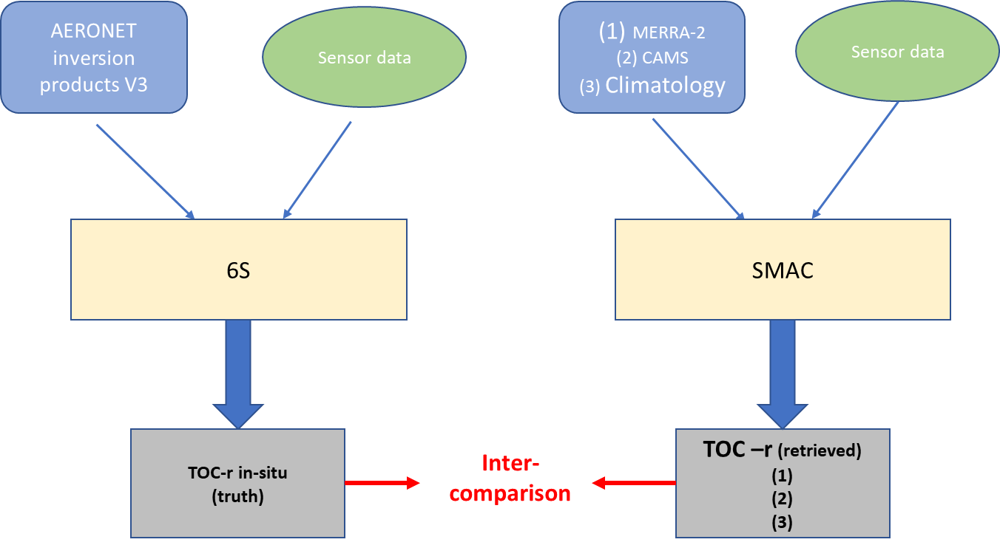
Figure 1: Validation methodology logic
Table 2: List of AERONET sites used for validation
Uncertainty Analysis Following FIDUCEO Approach
Primary Measurement Equation
The TOC directional reflectance for each spectral band j is obtained through the SMAC atmospheric correction:
\[\begin{aligned}
R_{toc}\left( \theta_{s},\theta_{v},\Delta\Phi \right)
&= f\left( R_{toa},T_{g},T_{sca},R_{atm},s_{atm};U_{H_{2}O},U_{O_{3}},P_{s},\tau_{a}^{550},aerosol\_ model \right) \\
&\quad + \varepsilon_{0}
\end{aligned} \tag{19}\]
Where:
- Rtoc: Top-of-Canopy directional reflectance (output)
- Rtoa: Top-of-Atmosphere reflectance (primary input)
- Tg: Total gaseous transmission
- Tsca: Atmospheric scattering transmission
- Ratm: Atmospheric path reflectance
- satm: Atmospheric spherical albedo
- UH₂O: Total column water vapor (auxiliary input from MERRA-2)
- UO₃: Total column ozone (auxiliary input from MERRA-2)
- Ps: Surface pressure (derived from DEM and MERRA-2 SLP)
- τa⁵⁵⁰: Aerosol optical thickness at 550 nm (auxiliary input from MERRA-2)
- aerosol model: Selected aerosol optical properties
- ε₀: Second-order uncertainty terms
Primary Uncertainty Equation
The total TOC reflectance uncertainty is derived from the measurement equation through uncertainty propagation:
\[u\left( R_{toc}^{j} \right) =
\sqrt{\begin{aligned}
&\left( \frac{\partial R_{toc}^{j}}{\partial R_{toa}^{j}}u(R_{toa}^{j}) \right)^{2}
+ \left( \frac{\partial R_{toc}^{j}}{\partial U_{H_2O}}u(U_{H_2O}) \right)^{2} \\
&+ \left( \frac{\partial R_{toc}^{j}}{\partial U_{O_3}}u(U_{O_3}) \right)^{2}
+ \left( \frac{\partial R_{toc}^{j}}{\partial P_{S}}u(P_{S}) \right)^{2} \\
&+ \left( \frac{\partial R_{toc}^{j}}{\partial \tau_{a}^{550}}u\left( \tau_{a}^{550} \right) \right)^{2}
+ \left( u\left( R_{toc}^{j} \right)_{ensemble} \right)^{2} \\
&+ \left( u\left( R_{toc}^{j} \right)_{RTM} \right)^{2}
\end{aligned}} + u^{2}(0) \tag{20}\]
Where individual contributions include:
- TOA reflectance uncertainty (from Level 1C, propagated with analytical Jacobians)
- Gaseous absorption uncertainties (O₃, H₂O, propagated with analytical Jacobians)
- Surface pressure uncertainty (from DEM + geolocation, propagated with finite difference)
- Aerosol optical depth uncertainty (from MERRA-2 validation studies, propagated with finite difference)
- Aerosol model uncertainty (from AMIP ensemble spread)
- Radiative transfer approximation errors (SMAC vs. exact RT, terrain slope, adjacency…)
- Second-order effects (u²(0) term)
Effects Tables (FIDUCEO Methodology)
Following Popp and Mittaz (2022), each uncertainty source is characterized through “effects tables” documenting:
Affected term in measurement equation
Maturity of uncertainty estimate (0=none to 3=rigorous)
Correlation structure (type and scale, spatial and temporal)
PDF shape and magnitude
Sensitivity coefficients
TOA Reflectance Uncertainty
| Name |
Direct TOA reflectance inversion |
|
| Affected term |
Rtoc = f(Rtoa) |
|
| Maturity |
3 - Rigorous analysis |
Direct propagation with analytical Jacobians |
| Correlation type |
From Level 1C product |
Random, structured, common components |
| Correlation scale (spatial) |
Pixel-dependent |
Structured: scan-line or column correlations |
| Correlation scale (temporal) |
Scene-independent |
Random component uncorrelated |
| PDF shape |
Gaussian |
Assumed from calibration analysis |
| Magnitude |
DTOA-r from L1C |
Band-dependent, typically 0.01-0.03 |
| Sensitivity |
c₁ = ∂Rtoc/∂Rtoa = η²·T |
Analytical Jacobian from SMAC |
Table 3: TOA reflectance uncertainty summary
Ozone Column Uncertainty
| Name |
Total column ozone uncertainty |
|
| Affected term |
Rtoc = f(UO₃) via Tg |
|
| Maturity |
3 - Based on literature |
MERRA-2 validation studies |
| Correlation type |
Structured (regional synoptic patterns) |
|
| Correlation scale (spatial) |
~500 km |
Synoptic weather systems |
| Correlation scale (temporal) |
~3 days |
Weather pattern persistence |
| PDF shape |
Gaussian |
|
| Magnitude |
6% of UO₃ value |
From Wargan et al. (2017), Davis et al. (2017) |
| Sensitivity |
c₂ = ∂Rtoc/∂UO₃ |
Analytical: ∂Rtoc/∂UO₃ = ∂Rtoc/∂TO₃ · ∂TO₃/∂UO₃ |
Table 4: Ozone uncertainty summary
Water Vapor Column Uncertainty
| Name |
Total column water vapor uncertainty |
|
| Affected term |
Rtoc = f(UH₂O) via Tg |
|
| Maturity |
2 - Estimated from literature |
MERRA-2 assessment |
| Correlation type |
Structured (weather fronts) |
|
| Correlation scale (spatial) |
~200 km |
Convective systems |
| Correlation scale (temporal) |
~1 day |
Rapid atmospheric changes |
| PDF shape |
Gaussian |
|
| Magnitude |
20% of UH₂O value |
Conservative estimate (Davis et al., 2017) |
| Sensitivity |
c₃ = ∂Rtoc/∂UH₂O |
Analytical (same form as ozone) |
Table 5: Water vapor uncertainty summary
Surface Pressure Uncertainty
The uncertainty on the surface pressure \(P_{S}\) is due to the uncertainty on the meteorological sea level pressure P0 from MERRA-2 SLP parameter (very low, <1 hPa), and the way the extrapolation to the altitude of the surface z is done. z is obtained through GTOPO30 elev, which has a resolution close to the targeted satellite product. The uncertainty in the mean altitude of the pixel is ∆z.
The surface pressure Ps is derived as:
\[P_{S} = P_{0}\ e^{- \frac{g}{r\lambda}T^{'}} \tag{21}\]
\[T^{'} = \ln(rT) - \ln(rT - r\lambda z) \tag{22}\]
Where T is the temperature above ground (from MERRA-2 T10M parameter), g is Earth’s gravity (9.80665 m.s−2), r is the gas constant for dry air (287.058 J.kg−1.K−1) and λ is the lapse rate of the atmosphere, here taken as −0.006 K.m−1 (Van Besselaar et al., 2011). The accuracy of this model depends on the variability of λ (typically ∆λ = 0.002 K.m−1). An uncertainty of \(\mathrm{\Delta}_{P_{s}}^{\lambda}\)~1hPa could be assigned to this modeling error.
However, the uncertainty in the geolocation could result in a significant uncertainty ∆z, especially in rough terrain. The latter error could be partly a random error and a pixel dependent bias.
For example, if the geolocation error is purely random and isotropic, with a stable standard deviation, one may estimate the altitude error from local terrain slope and geolocation error.
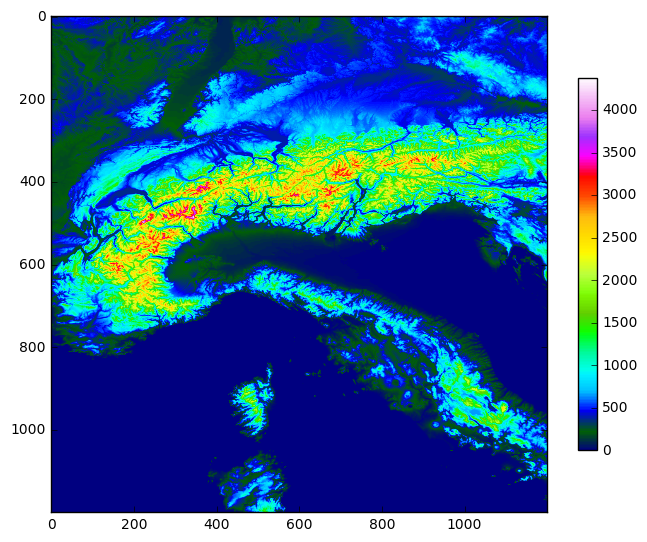
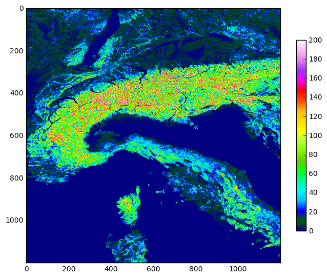
Figure 2: Surface elevation (left) and local standard deviation of altitude (right), both in m, from GTOPO30.
The implementation derives Delev directly from elev and local maximum slope, using a geolocation error of 0.5 pixel and the sensor spatial resolution:
\[u(z) = \Delta z = \Delta r \cdot \tan\left(\theta_{\max}\right)\]
where \(\Delta r = 0.5 \times \text{pixel\_size}\) and \(\theta_{\max}\) is the local maximum slope used for terrain uncertainty estimation.
Finally, the uncertainty on Ps is:
\[u(P_{s}) = \sqrt{\left\lbrack \left( \mathrm{\Delta}_{P_{s}}^{\lambda} \right)^{2} + \left( \mathrm{\Delta}_{P_{s}}^{z} \right)^{2} \right\rbrack/2} \tag{23}\]
with
\[\mathrm{\Delta}_{P_{s}}^{z} = \left| J_{P_{s}}^{z}.u(z) \right| \tag{24}\]
and
\[J_{P_{s}}^{z} = - \frac{gP_{S}}{r(T - \lambda z)} \tag{25}\]
| Name |
Surface pressure uncertainty |
|
| Affected term |
Rtoc = f(Ps) via Rayleigh scattering |
|
| Maturity |
3 - Rigorous propagation |
From DEM + meteorological uncertainty |
| Correlation type |
Mixed: meteorological (common) + elevation (structured) |
|
| Correlation scale (spatial) |
Meteo: global; Elev: DEM resolution |
|
| Correlation scale (temporal) |
Meteo: >1 month; Elev: permanent |
|
| PDF shape |
Gaussian |
|
| Magnitude |
u(Ps) = sqrt((ΔPsλ)2 + (ΔPsz)2) / sqrt(2) |
ΔPs^λ ~ 1 hPa; ΔPs^z from derived Δz |
| Sensitivity |
c4 = ∂Rtoc/∂Ps |
Finite difference: δPs = 10 hPa |
Table 6: Surface pressure uncertainty summary
Critical Implementation Note (v1.1): the computation of \(T^{'} = \ln(rT) - \ln(rT - r\lambda z)\) overflows in float16 for typical temperatures (\(T \approx 290\) K, \(rT \approx 83246\), which exceeds the float16 maximum of 65504), producing NaN pressure and NaN Rtoc. The implementation therefore stores and processes SLP and T10M as float32 in the ancillary cache (_MERRA_CACHE_FLOAT32_VARS = {'SLP', 'T10M'}). See Appendix D.2 for details.
Aerosol Optical Depth Uncertainty
Quantifying aerosol optical depth (AOD) uncertainty in global chemical transport models (CTMs) remains critical for climate and air quality applications. Recent studies have highlighted systematic biases and uncertainties in leading reanalysis products such as CAMS and MERRA-2.
Comparative validation studies against AERONET ground-based observations reveal that both CAMS and MERRA-2 exhibit regional biases, with typical AOD uncertainties ranging from 30-50% depending on aerosol type and geographic location. Model-observation discrepancies are particularly pronounced over dust-dominated regions and biomass burning areas, where AOD can be underestimated by factors of 1.5-2.0.
Advances in uncertainty quantification have emerged through ensemble approaches and data assimilation techniques. Studies show that assimilating satellite retrievals can reduce AOD uncertainty by 20-35%, though systematic errors in aerosol vertical distribution persist. Emission inventory uncertainties, particularly for anthropogenic sources in rapidly developing regions, can account for 25-40% of total AOD uncertainty.
The community is moving toward probabilistic frameworks that explicitly quantify measurement uncertainties, model uncertainties, and structural uncertainties arising from parameterization choices in aerosol microphysics, chemistry, and removal processes.
The AOD uncertainties (Root Mean Square Errors) could be assigned on a regional scale using a climate type classification map like the one used in Gueymard and Yang 2020. Years of AOD @550 and Angström exponent 3-hourly datasets from MERRA-2 and CAMS have been evaluated at 793 AERONET stations. The validation was conducted based on continents and Köppen-Geiger classification (see Figure 3).
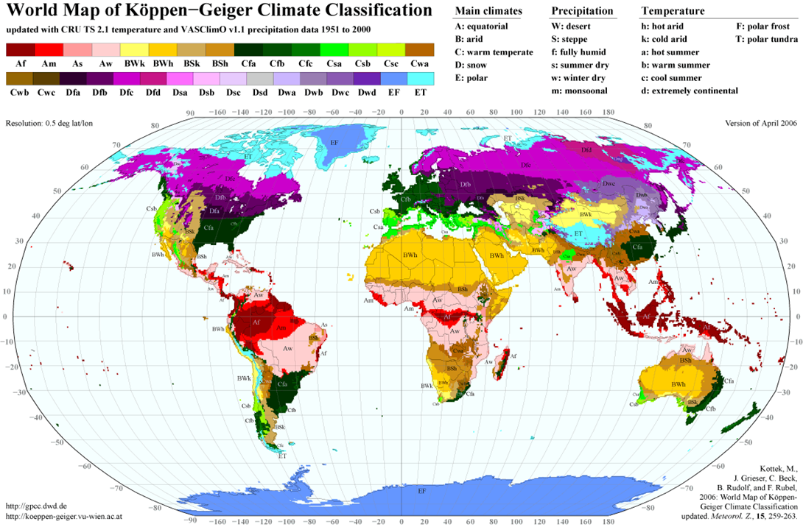
Figure 3: Map of Köppen-Geiger climate classification
RMSE Model
Based on the Gueymard and Yang findings, a practical operational uncertainty predictor can be formulated as:
\[\sigma\left( \tau_{a}^{550} \right) = \max\left( \sigma_{base},\sigma_{relative} \times \tau_{a}^{550} \right) \tag{26}\] Where:
- σbase = 0.03 (clean atmosphere baseline)
- σrelative = 0.15 (15% relative uncertainty)
This is justified by the following arguments
- Low AOD regime (τa < 0.2): Dominated by instrument noise ~0.03
- Moderate-high AOD (τa ≥ 0.2): Scales with aerosol loading → 15% uncertainty
Köppen-Geiger climate classification multipliers are applied operationally to the AOD uncertainty term:
| Oceanic/Polar |
0.7× |
Open oceans, Arctic |
| North America/Europe |
1.0× |
Baseline reference |
| Dust-dominated |
1.5× |
Sahara, Arabian Peninsula |
| Biomass burning |
1.4× |
Amazon, Sub-Saharan Africa |
| High pollution |
1.3× |
East Asia, South Asia |
| Name |
AOD at 550 nm uncertainty |
|
| Affected term |
Rtoc = f(τa⁵⁵⁰) |
|
| Maturity |
3 - Based on comprehensive validation |
Gueymard and Yang (2020) study |
| Correlation type |
Structured (aerosol transport patterns) |
|
| Correlation scale (spatial) |
Regional (~200-500 km) |
Aerosol plume extent |
| Correlation scale (temporal) |
~1 week |
Aerosol lifetime |
| PDF shape |
Skewed Gaussian (log-normal for high AOD) |
|
| Magnitude |
σ(τa⁵⁵⁰) = max(0.03, 0.15×τa⁵⁵⁰) × MKG (MKG from Köppen-Geiger class) |
|
Table 7: AOD550 uncertainty summary
Aerosol Model Selection Uncertainty
The SMAC coefficients are computed by an in-house radiative transfer model depending on the aerosol mixture (see section 9)
Xu = \(\frac{\tau_{a;u}^{550}}{\tau_{a}^{550}}\) [u \(\in \{ DU,BC,OC,SE,SU\}\rbrack\) from MERRA-2
iaero = \(\text{argmin}_i \sum_{u} \left( X_u - X_{u,i} \right)^{2}\), for \(i=0,\ldots,147\) (currently one model selected)
The Xu,i basis for the 148 predefined models are stored in a text file and read once.
So, it is possible simply to choose a couple of aerosol models that fit best with the MERRA-2 data and run SMAC-CL on an ensemble of models. We rely here on the AMIP dataset (see section 2.4) that yields an ensemble of 10 aerosols models globally monthly. An example is given in Figure 4 .
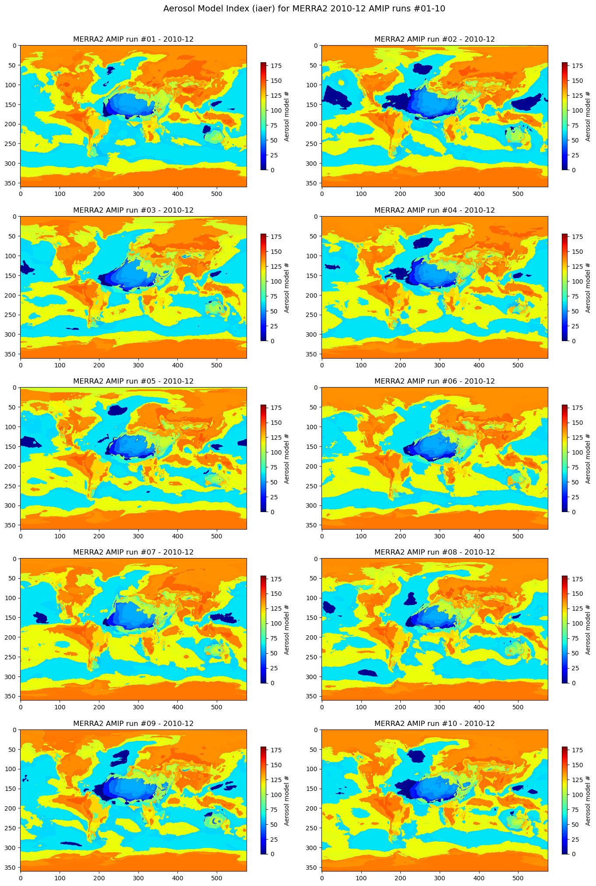
Figure 4: SMAC Aerosol model index (0-147) reconstructed from the AMIP ensemble runs #1-10 for December 2010
| Name |
Aerosol optical properties (model type) |
|
| Affected term |
Rtoc = f(aerosol_model) |
|
| Maturity |
2 - Ensemble approach |
AMIP 10-member spread |
| Correlation type |
Structured (regional aerosol regimes) |
|
| Correlation scale (spatial) |
~100 km (1° grid) |
Climatology resolution |
| Correlation scale (temporal) |
~1 week |
Aerosol type changes |
| PDF shape |
Empirical (ensemble spread) |
|
| Magnitude |
u_Rtoc_ensemble = std(Rtoc_j), j=1..10 |
From AMIP runs |
| Sensitivity |
Implicit in ensemble |
No explicit Jacobian |
|
For each pixel:
1. Select 10 preferred aerosol models from 148 options
(based on MERRA-2 species fractions matching AMIP ensemble)
2. Run SMAC with each model → Rtoc,1 ... Rtoc,10
3. ``u_Rtoc_ensemble`` = ``standard_deviation``(``Rtoc,j``) |
|
Table 8: Aerosol model uncertainty summary
Radiative Transfer Approximations
Three sources of RT approximation errors:
Lambertian Surface Assumption
It is most important for NIR and strong aerosol loading (in that case uncertainty due to AOD dominating). The modelling of the effect and a way to estimate the uncertainty associated is described in section 8.5. The surface BRDF shape is modeled using two parameters \({\ k}_{1}^{p}\) and \(k_{2}^{p}\), depending on spectral band.
In the baseline run, the surface is supposed to be lambertian (in that case\({\ k}_{1}^{p} = k_{2}^{p} = 0\)). In a second run, those two parameters are assigned a climatological value, for example coming from the C3S Multi Sensor Surface Albedo products k0, k1 and k2 with \(k_{1}^{p} = \ \frac{k_{1}}{k_{0}}\ ;\ k_{2}^{p} = \ \frac{k_{2}}{k_{0}}\)
Difference in Rtoc from the two runs gives an estimation of the BRDF effects.
\(u\left( R_{toc}^{j} \right)_{RTM\_BRDF} = \left|\left( {\ k}_{1}^{p}=0,k_{2}^{p} =0 \right) - \left( {\ k}_{1}^{p} \neq 0, k_{2}^{p} \neq 0 \right)\right|\)
| Significance |
Moderate (NIR, high AOD) |
|
| Maturity |
1 - Initial assessment |
From 6S validation |
| Magnitude |
~1% for most cases |
Up to 5% for strong BRDF + high AOD |
| Mitigation |
Using BRDF included in the product * |
|
(* https://dast.copernicus-climate.eu/documents/satellite-albedo/D1.3.4-v2.0_ATBD_CDR_SA_MULTI_SENSOR_v2.0_PRODUCTS_v1.1.pdf)
Table 9: RTM Lambertian assumption uncertainty summary
Terrain Slope Effects
Mountain areas, rough terrain, have been modelled and estimated through a simple model following cesbio (https://www.cesbio.cnrs.fr/multitemp/2481/)
The slope_eff function computes the terrain-induced relative effect. Here are the mathematical equations:
Input Variables:
\(\theta_{s}\) : Solar Zenith Angle (SZA)
\(\phi_{s}\) : Solar Azimuth Angle (SAA)
\(s\) : Terrain slope (computed from DEM using xdem python package)
\(\phi_{a}\) : Terrain aspect (computed from DEM using xdem python package)
Derived Quantities:
- Cosine of solar zenith angle:
\[\mu_{s} = cos\left( \theta_{s} \right) \tag{27}\] - Cosine of terrain slope:
\[\mu = cos(s) \tag{28}\] - Effective cosine of incidence angle on tilted surface:
\[\begin{aligned}
\mu_{i} &= \mu_{s} \cdot \mu \\
&\quad + \sqrt{1 - \mu_{s}^{2}} \cdot \sqrt{1 - \mu^{2}} \cdot cos\left( \phi_{s} - \phi_{a} \right)
\end{aligned} \tag{29}\]
\[f_{sky} = \frac{1 + \mu}{2} \tag{30}\] - Ground view factor:
\[f_{ground} = \frac{1 - \mu}{2} \tag{31}\] - Slope Error
\[slope_{eff} = \frac{T}{
T_{dir} \cdot \max\left(0,\frac{\mu_{i}}{\mu_{s}}\right)
+ T_{dif} \cdot f_{sky}
+ T \cdot f_{ground} \cdot \rho_{env}
} \tag{32}\]
with the direct term explicitly set to zero for terrain facets facing away from the sun (\(\mu_i \le 0\)), so it never contributes a negative correction.
- \({u\left( R_{toc}^{j} \right)}_{RTM - slope} = \left|R_{toc}^{j}*(slope_{eff} - 1)\right|\)
Where:
\(T\) : Total atmospheric transmittance (an output of the SMAC function)
\(T_{dir}\) : Direct atmospheric transmittance (an output of the SMAC function)
\(T_{dif}\) : Diffuse atmospheric transmittance (an output of the SMAC function)
\(\rho_{env}:\) Average environment reflectance, (supposed here equal to pixel ground reflectance)
| Significance |
Moderate to High in mountainous regions |
|
| Maturity |
1 - Initial assessment |
From CESBIO simple model (see text) |
| Magnitude |
Several % |
Could be 40% |
| Mitigation |
Simple model |
From CESBIO simple model (see text) |
Table 10: RTM terrain effect uncertainty summary
SMAC Polynomial Fitting Errors
The estimation of the uncertainty due to the SMAC fitting errors is presented in section 8.4
| Significance |
Moderate |
|
| Maturity |
3 - Quantified through RT comparisons |
|
| Magnitude |
~1-10% RMSE vs. 6S |
Validated with neural network |
Table 11: SMAC fitting uncertainty summary
Uncertainty Characterization Summary
Correlation Structures
| TOA-r (random) |
None |
None |
Average as √(Σu²)/N |
| TOA-r (structured) |
Scan-line or column |
None |
Use L1C correlation matrix |
| TOA-r (common) |
Global |
Global |
Simple average (no reduction) |
| UO₃ |
~500 km (synoptic) |
~3 days |
Exponential decay |
| UH₂O |
~200 km (convective) |
~1 day |
Exponential decay |
| Ps (meteorological) |
Global |
>1 month |
Common (no reduction) |
| Ps (elevation) |
DEM resolution |
Permanent |
Structured (terrain-correlated) |
| τa⁵⁵⁰ |
~200-500 km (plume) |
~1 week |
Exponential decay |
| Aerosol model |
1° (climatology grid) |
1 week |
Rectangle function |
| RT approximations |
Scene-dependent |
None |
Random or systematic (case-by-case) |
Limitations and Future Improvements
Known Limitations
Current Implementation:
- Surface BRDF: Simplified kernel model
- Impact: Up to 10% error in directional reflectance over non-forest surfaces
- Terrain effect: Simplified model
- Water Vapor Uncertainty: Conservative 20% estimate
- Impact: May overestimate total uncertainty in dry conditions
- Future: Refined characterization from MERRA-2 validation studies
- Adjacency Effects: Not corrected
- Impact: Significant for high-contrast scenes (coast, cloud edge)
- Option: Implement semi-empirical adjacency correction
Status update: Adjacency effects remain a confirmed known limitation (not corrected in the operational chain). Köppen-Geiger regional AOD uncertainty multipliers (Section 5.3.5) are now implemented and applied to the AOD uncertainty used in uncertainty propagation.
Second-Order Effects (u²(0) term)
Effects considered minor and not explicitly propagated:
| Trace gas absorption (CO₂, CH₄, N₂O) |
<0.001 |
Window channel placement |
| Rayleigh scattering altitude dependence |
<0.002 |
Accurate DEM + pressure correction |
| LUT interpolation errors |
<0.001 |
Dense sampling validated vs. 6S |
| Aerosol hygroscopic growth |
<0.005 |
Implicit in fixed RH=80% model |
| Polarization |
<0.003 |
Minor for broad-band sensors |
| Spectral band mismatch |
<0.002 |
SMAC computed for actual RSR |
Table 12: Second order uncertainty summary
Combined second-order: u(0) ≈ 0.007 (added quadratically to total)
Conclusions
This ATBD demonstrates a comprehensive implementation of the FIDUCEO uncertainty propagation methodology for atmospheric correction of satellite vegetation sensors. Key achievements:
Rigorous Uncertainty Quantification: All major uncertainty sources are identified, characterized, and propagated through the measurement equation
Operational AOD Uncertainty Model: Based on extensive MERRA-2 validation (Gueymard & Yang 2020), providing realistic AOD uncertainties: σ(τa) = max(0.03, 0.15×τa) with regional adjustments
Ensemble Approach for Model Uncertainty: AMIP 10-member ensemble quantifies aerosol optical property uncertainties
Efficient GPU Implementation: SMAC-CL enables fast processing while computing full Jacobian matrices
Validation Framework: Following Aerosol_cci and FIDUCEO best practices (Popp & Mittaz 2022)
This approach provides climate-quality TOC reflectances with fully traceable, metrologically sound uncertainties suitable for:
References
FIDUCEO Methodology:
- Mittaz, J., Merchant, C.J., Woolliams, E.R. (2019). Applying principles of metrology to historical Earth observations from satellites. Metrologia, 56, 032002.
- Popp, T., Mittaz, J. (2022). Systematic Propagation of AVHRR AOD Uncertainties—A Case Study to Demonstrate the FIDUCEO Approach. Remote Sensing, 14(4), 875.
MERRA-2 Validation:
- Gueymard, C., Yang, D. (2020). Worldwide validation of CAMS and MERRA-2 reanalysis aerosol optical depth products using 15 years of AERONET observations. Atmospheric Environment, 225, 117216.
- Wargan, K., et al. (2017). Evaluation of the Ozone Fields in NASA’s MERRA-2 Reanalysis. Journal of Climate, 30, 2961-2988.
- Davis, S.M., et al. (2017). Assessment of upper tropospheric and stratospheric water vapor and ozone in reanalyses. Atmospheric Chemistry and Physics, 17, 12743-12778.
Atmospheric Correction:
- Rahman, H., Dedieu, G. (1994). SMAC: A simplified method for the atmospheric correction of satellite measurements in the solar spectrum. International Journal of Remote Sensing, 15, 123-143.
- Vermote, E.F., et al. (1997). Second Simulation of the Satellite Signal in the Solar Spectrum (6S). IEEE TGRS, 35, 675-686.
Aerosol Climatology:
- Kinne, S., et al. (2006). An AeroCom initial assessment—optical properties in aerosol component modules of global models. Atmospheric Chemistry and Physics, 6, 1815-1834.
Surface Pressure:
- Van Besselaar, E.J.M., et al. (2011). A European daily high-resolution observational gridded data set of sea level pressure. Journal of Geophysical Research, 116, D11110.
- Breon, F.-M., A. Vermeulen and J. Descloitres, An evaluation of satellite aerosol products against sunphotometer measurements, Remote Sensing of Environment, Volume 115, Issue 12, pp 3102-3111, 2011. https://doi.org/10.1016/j.rse.2011.06.017.
- Buchard, V., C.A. Randles, A.M. da Silva, A. Darmenov, P.R. Colarco, R. Govindaraju, R. Ferrare, J. Hair, A.J. Beyersdorf, L.D. Ziemba, and H. Yu, The MERRA-2 Aerosol Reanalysis, 1980 Onward. Part II: Evaluation and Case Studies. J. Climate, 30, 6851–6872, 2017. https://doi.org/10.1175/JCLI-D-16-0613.1
- Ramon D. and R. Santer, Operational remote sensing of aerosols over land to account for directional effects, Applied Optics-LP, 40, 3060-3075 (2001).
- Randles, C.A., A. M. da Silva, V. Buchard, P. R. Colarco, A. Darmenov, R. Govindaraju, A. Smirnov, B. Holben, R. Ferrare, J. Hair, Y. Shinozuka, and C. J. Flynn, The MERRA-2 Aerosol Reanalysis, 1980 Onward. Part I: System Description and Data Assimilation Evaluation. Journal of Climate 30:17, 6823-6850, 2017.
Appendices
Appendix A: SMAC Coefficient Calculation
Spectral response functions and gaseous absorption
We give here typical atmospheric gaseous transmissions in the Proba-V spectral bands and the RSRF for the CENTER camera. All radiative transfer computations have also been done for LEFT and RIGHT cameras RSRF’s
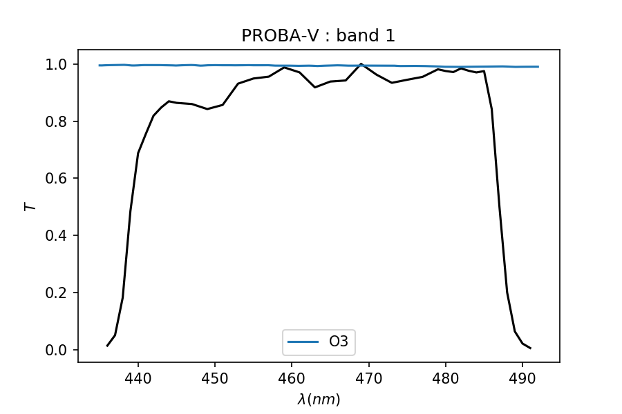
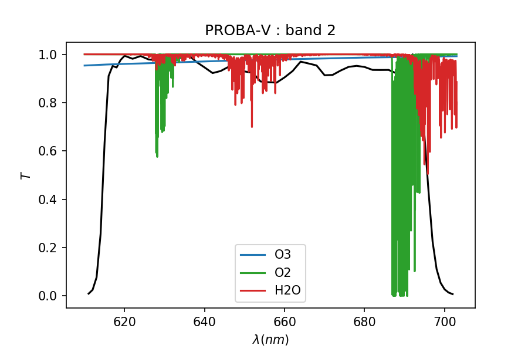
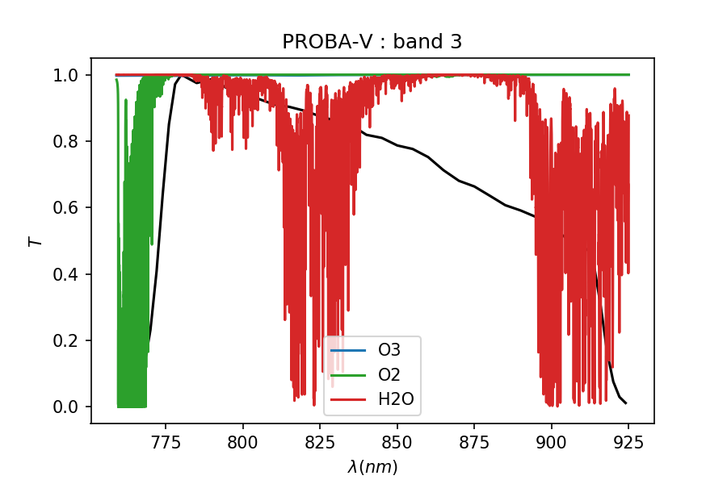
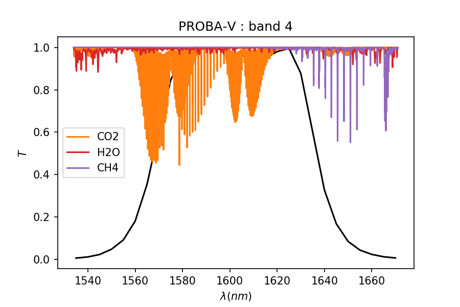
Figure 5: Typical atmospheric gaseous transmissions in Proba-V bands and associated spectral response functions (CENTER camera examples).
Processing chain
In Figure 6 is shown how SMAC coefficients are derived from basic data.
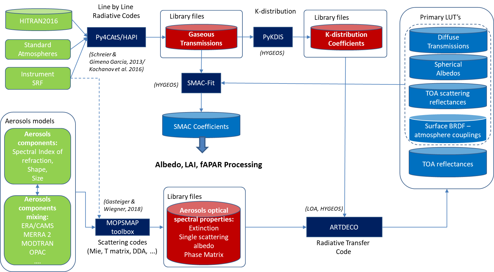
Figure 6: Organization of the radiative transfer tools at HYGEOS for computing atmospheric Look Up Tables from primary data
Gaseous absorption modelling
With the RSRF data as described in the previous section, we computed the typical absorption based on the spectroscopic HITRAN 2012/2016 database (Gordon et al., 2017) and the line by line radiative transfer tools Py4Cats (Schreier et al., 2013) and/or HAPI (Kochanov et al., 2016). Then regression of gaseous transmission versus gas concentrations, air masses and barometric pressure (see Figure 7) were computed to yield SMAC coefficients fitting the gaseous absorption. Correlated K-distribution coefficients computed with the new tool PyKdis, developed by HYGEOS, are also obtained in this step, for further use in the simulation of real TOA radiances for both sensors.
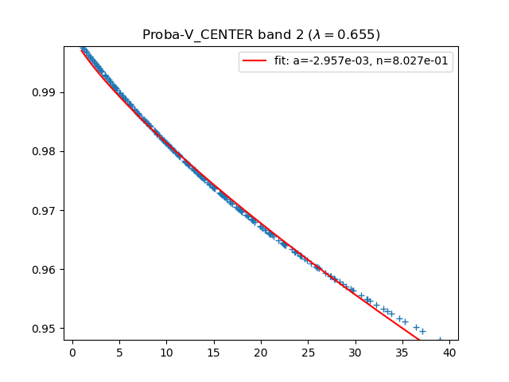
Figure 7: Example of the fit of water vapor transmission in band 2 of Proba-V Center camera. SMAC fitting model is T = exp ( a . (m. UH2O)n), where m is the air mass and UH2O is the water vapor column
Radiative transfer computations and fit accuracy
Radiative transfer equation for each pixel (geometry, band, AOT, Psurf) is solved independently using ARTDECO RT package (http://www.icare.univ-lille1.fr/projects/artdeco). The TOA reflectance computations are done for a black surface and no gaseous absorption to simulate scattering quantities used in 6S/SMAC, i.e.:
TOA reflectance (ρtoa) for aerosols and Rayleigh mixing, Aerosols and Rayleigh only
Total (direct + diffuse) Transmission
Spherical albedo
For each band, those optical quantities are simulated for various geometries, surface pressure, aerosol optical thicknesses… For example, for the TOA reflectance:
RAA: 121 values from 0 to 180°
SZA : 38 values from 0 to 89° (but used only if <70°)
VZA: 47 values from 0 to 89° (but used only if <70°)
Surface pressure: 6 values from 600 to 1050 hPa
AOT at 550 nm: 16 values from 0.01 to 1.5 (but used only if < 0.8)
Several multi-dimensional fits are performed to give the SMAC model parameters of scattering quantities. An estimation of the quality of the fit is also obtained, giving the potential to estimate the radiative transfer modeling error (see Figure 8, Figure 9, Figure 10).
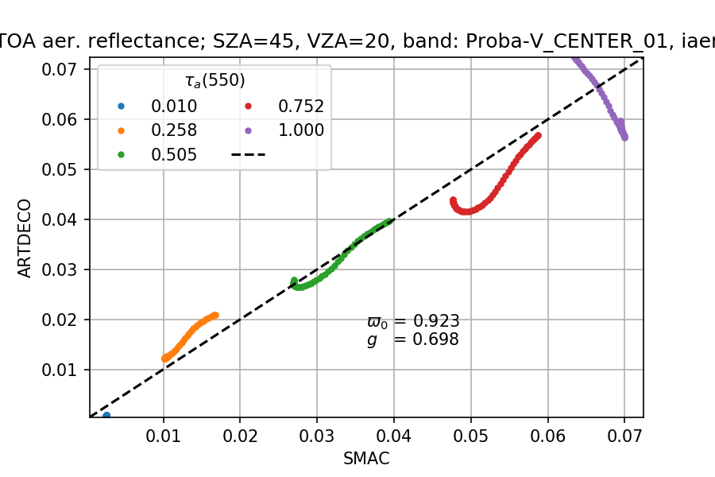
Figure 8: Example of accuracy of the SMAC model compared to ARTDECO. Aerosol TOA reflectance for band 01 of Proba-V center camera for one SZA and VZA and for all azimuth, for AOT at 550 nm ranging from 0.01 to 1 and for the aerosol model #1. The fit was performed for all VZA < 60, SZA <70, AOT (550) <0.76, all azimuths. The accuracy decreases above an AOT at 550 nm of ~ 0.5
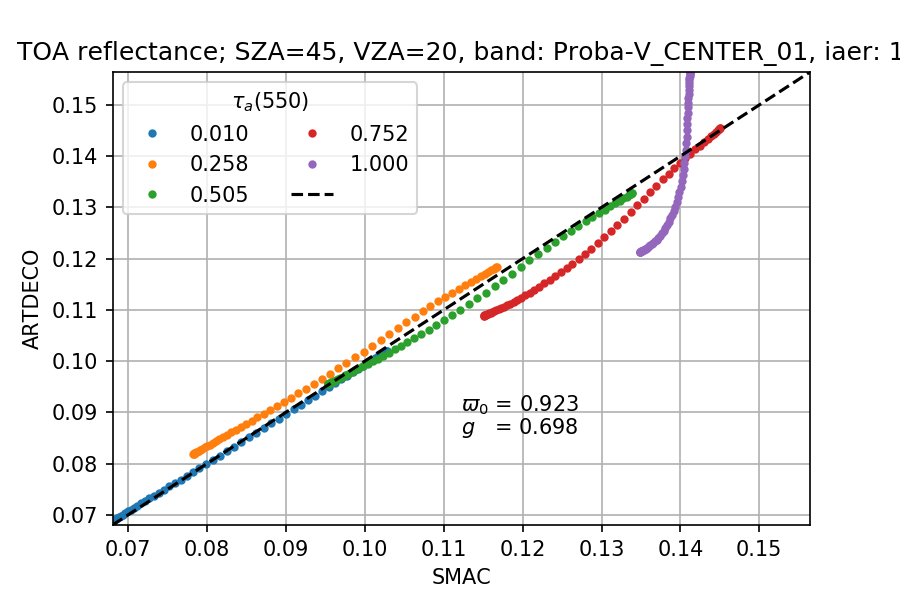
Figure 9: Same as Figure 8 but for TOA atmospheric reflectance.
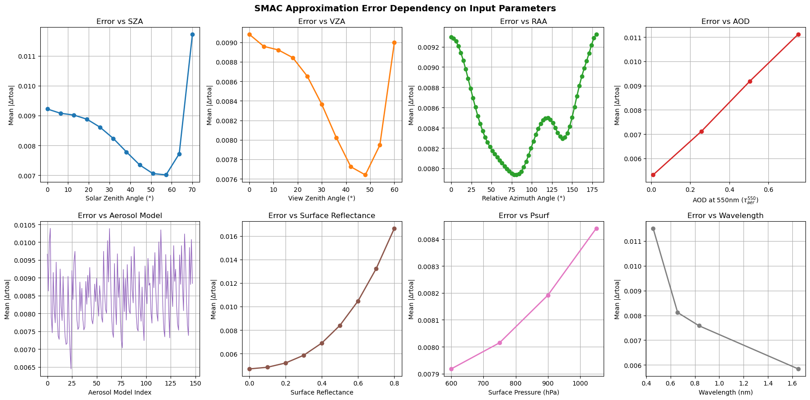
Figure 10: Rtoa SMAC Fit mean accuracy as a function of the various inputs. Statistics are given for all the LUT nodes and AOT (550) <0.76.
References
Schreier, F., Gimeno García, S.; Hochstaffl, P., Städt, S., (2019) Py4CAtS—PYthon for Computational ATmospheric Spectroscopy. Atmosphere, 10, 262. https://doi.org/10.3390/atmos10050262
I. E. Gordon, L. S. Rothman, C. Hill, R. V. Kochanov, Y. Tan, et al., (2017) The HITRAN2016 molecular spectroscopic database, J. Quant. Spectrosc. Radiat. Transfer 203, 3-69 (2017)
R.V. Kochanov, I.E. Gordon, L.S. Rothman, P. Wcislo, C. Hill, J.S. Wilzewski (2016). HITRAN Application Programming Interface (HAPI): A comprehensive approach to working with spectroscopic data, J. Quant. Spectrosc. Radiat. Transfer, 177, 15-30 (2016).
https://hitran.org/hapi
Hess, M.; Koepke, P. & Schult, I, (1998). Optical Properties of Aerosols and Clouds: The Software Package OPAC. Bulletin of the American Meteorological Society, 1998, 79, 831-844
Fit Uncertainty Model
This part aims to estimate the incertitude of the outputted reflectance of SMAC using lightweight and fast Neural Network. Those models will be exclusively Feed Forward Neural Network (also called MLP) and will be small to satisfy hardware constraint on memory usage.
The required library for the inference of ML model is ONNXRuntime. It is a library that optimizes and executes machine learning models in ONNX (Open Neural Network Exchange) format. In operational workflows, it enables fast, efficient model deployment by opening model as black-box function.
Inputs :
Angles (SZA, VZA, RAA)
AOD at 550 nm
Pression
TOC-r
iaer
TOA-r
After using the SMAC coefficients simulations representing more than 106 points, we performed a test using a very fast pots processing pure python NN inference for one band. The test outcome, shown hereafter, is promising to show a Mean Square Error of 0.0097 on the predicted RTM uncertainty on Rtoc
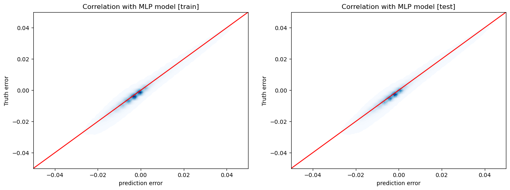
Figure 11: Example of RTM fit uncertainty prediction from the ONNX model for one spectral band.
BRDF effect estimation
The baseline AC are run under the assumption of a lambertian surface. If the shape of the surface BRDF is known, we can optionally include this knowledge into the AC scheme with the following modelling
Surface BRDF model (RossThick-LiSparse-R)
In the following, we restrict the description to a model with three parameters of the form:
\[\rho_{g}(\theta_{s}, \theta_{v}, \phi) = k_{0} + k_{1}F_{1}(\theta_{s}, \theta_{v}, \phi) + k_{2}F_{2}(\theta_{s}, \theta_{v}, \phi) \tag{33}\]
While k0 quantifies an isotropic contribution to the reflectance factor F0=1, functions F1 and F2 represent the angular distribution related to geometric and volumetric surface scattering processes, respectively. Lucht et al. (2000) suggest the RossThick-LiSparse-Reciprocal model (simply referred to as the Ross-Li BRDF model) that results from the combination of two models for the definition of the volumetric (RossThick) and geometric (LiSparse-R) kernels. The geometric kernel is expressed as follows:
\[F_{1}\left( \theta_{s}{,\theta}_{v},\phi \right) = O\left( \theta_{s}{,\theta}_{v},\phi \right) - sec\left( {\theta\ '}_{s} \right) - sec\left( {\theta\ }_{v}^{'} \right) + \frac{1}{2}\left( 1 + cos(\xi\ ') \right)\sec\left( {\theta\ '}_{s} \right)\sec\left( {\theta\ }_{v}^{'} \right) \tag{34}\]
Where,
\[O = \frac{1}{\pi}\left( t - sin(t)\cos(t) \right)\left( \sec\left( \theta_{s}^{\ '} \right) - sec\left( \theta_{v}^{\ '} \right) \right) \tag{35}\]
\[\cos(t) = 2\frac{\sqrt{D^{2} + \left( \tan\left( \theta_{s}^{\ '} \right)\tan\left( \theta_{v}^{\ '} \right)\sin(\phi) \right)^{2}}}{\sec\left( \theta_{s}^{\ '} \right) + sec\left( \theta_{v}^{\ '} \right)} \tag{36}\]
\[D = \sqrt{\tan^{2}\left( \theta_{s}^{\ '} \right) + \tan^{2}\left( \theta_{v}^{\ '} \right) - 2tan\left( \theta_{s}^{\ '} \right)\tan\left( \theta_{v}^{\ '} \right)\cos(\phi)} \tag{37}\]
\[\cos\left( \xi^{\ '} \right) = cos\left( \theta_{s}^{\ '} \right)\cos\left( \theta_{v}^{\ '} \right) + sin\left( \theta_{s}^{\ '} \right)\sin\left( \theta_{v}^{\ '} \right)\cos(\phi) \tag{38}\]
\[\theta_{s}^{\ '} = \tan^{- 1}\left( \frac{b_{RL}}{r}\tan\theta_{s} \right),\quad
\theta_{v}^{\ '} = \tan^{- 1}\left( \frac{b_{RL}}{r}\tan\theta_{v} \right) \tag{39}\]
And the volumetric kernel is defined as:
\[F_{2}\left( \theta_{s}{,\theta}_{v},\phi \right) =
\frac{\left( \frac{\pi}{2} - \xi \right)\cos(\xi) + sin(\xi)}{\cos\left( \theta_{s} \right) + cos\left( \theta_{v} \right)} - \frac{\pi}{4} \tag{40}\]
Where
\[\cos\left( \xi^{\ } \right) = cos\left( \theta_{s}^{\ } \right)\cos\left( \theta_{v}^{\ } \right)
+ sin\left( \theta_{s}^{\ } \right)\sin\left( \theta_{v}^{\ } \right)\cos(\phi) \tag{41}\]
The choice is used here: h/bRL=2 and bRL/r=1.
We can summarize the surface BRDF modelling as:
\[\rho_{g} = k_{0}\left\lbrack 1 + k_{1}^{p}F_{1} + k_{2}^{p}F_{2} \right\rbrack \tag{42}\]
with \(k_{1}^{p} = \frac{k_{1}}{k_{0}} ;\ k_{2}^{p} = \frac{k_{2}}{k_{0}}\)
kp’s are normalized coefficients that describe the departure from the lambertian reflector (in that case\({\ k}_{1}^{p} = k_{2}^{p} = 0\)), this is the baseline processing.
phic correction including BRDF effects
Fast radiative transfer model with BRDF
In the case of a horizontally homogeneous target, the surface BRDF shape can be included through the 6S formulation (Vermote et al., 1997), and the atmospheric correction equations [2-4] are the same except that we have a modified total atmospheric transmission \(T_{atm;g}\)(Ramon and Santer, 2001):
\[\begin{aligned}
T_{atm;g} &= \left( 1 - D\left( \mu_{v} \right) \right)\left( 1 - D\left( \mu_{s} \right) \right)
+ \frac{\overline{\rho_{g}}}{\rho_{g}}\left( 1 - D\left( \mu_{v} \right) \right)D\left( \mu_{s} \right) \\
&\quad + \frac{\overline{\rho_{g}}'}{\rho_{g}}D\left( \mu_{v} \right)\left( 1 - D\left( \mu_{s} \right) \right)
+ \frac{\overline{\overline{\rho_{g}}}}{\rho_{g}}D\left( \mu_{v} \right)D\left( \mu_{s} \right)
\end{aligned} \tag{43}\]
Where D is the ratio of diffuse over total transmission and \(\ \overline{\rho_{g}}\ \ and\ \overline{\overline{\rho_{g}}}\) are single and double directional weighted averages of the surface BRDF. The weight is the atmospheric downward radiance\(\ L_{atm}^{\downarrow}\) at the ground level:
\[\begin{aligned}
\overline{\rho_{g}} &= \overline{\rho_{g}}(\theta_{s}{,\theta}_{v},\phi) \\
&= \frac{\int_{0}^{2\pi}{\int_{0}^{\frac{\pi}{2}}{\cos\theta^{'}L_{atm}^{\downarrow}\left( \theta_{s}{,\ \theta}^{'},\varphi^{'} \right)\rho_{g}\left( \theta^{'},\theta_{v},\varphi^{'} - \phi \right)\sin{\theta^{'}d\theta^{'}d\varphi^{'}}}}}{\int_{0}^{2\pi}{\int_{0}^{\frac{\pi}{2}}{\cos{\theta^{'}L_{atm}^{\downarrow}\left( \theta_{s}{,\ \theta}^{'},\varphi^{'} \right)}}}\sin{\theta^{'}d\theta^{'}d\varphi^{'}}}
\end{aligned} \tag{44}\]
where \({\overline{\rho_{g}}}^{'}\left( \theta_{s}{,\theta}_{v},\phi \right) = \overline{\rho_{g}}(\theta_{v}{,\theta}_{s},\phi)\) and
\[\overline{\overline{\rho_{g}}} = \overline{\overline{\rho_{g}}}\left( \theta_{s}{,\theta}_{v},\phi \right) = \overline{{\overline{\rho_{g}}}^{'}\left( \theta_{s}{,\theta}_{v},\phi \right)} \tag{45}\]
The linearization of the ground reflectance allows the ground to derive depending on terms as a function of just kernel directional averages \(\overline{F_{1}},\overline{F_{2}},\overline{\overline{F_{1}}},\overline{\overline{F_{2}}}\):
\[\begin{aligned}
\overline{\rho_{g}} &= k_{0}\left\lbrack 1 + k_{1}^{p}\overline{F_{1}} + k_{2}^{p}\overline{F_{2}} \right\rbrack \\
\overline{\overline{\rho_{g}}} &= k_{0}\left\lbrack 1 + k_{1}^{p}\overline{\overline{F_{1}}} + k_{2}^{p}\overline{\overline{F_{2}}} \right\rbrack
\end{aligned} \tag{46}\]
\[\frac{\overline{\rho_{g}}}{\rho_{g}} = \frac{1 + k_{1}^{p}{\overline{F}}_{1} + k_{2}^{p}{\overline{F}}_{2}}{1 + k_{1}^{p}F_{1} + k_{2}^{p}F_{2}} \tag{47}\]
\[\frac{\overline{\rho_{g}}'}{\rho_{g}} = \frac{1 + k_{1}^{p}{\overline{F}}_{1}' + k_{2}^{p}{\overline{F}}_{2}'}{1 + k_{1}^{p}F_{1} + k_{2}^{p}F_{2}} \tag{48}\]
\[\frac{\overline{\overline{\rho_{g}}}}{\rho_{g}} = \frac{1 + k_{1}^{p}\overline{\overline{F_{1}}} + k_{2}^{p}{\overline{\overline{F}}}_{2}}{1 + k_{1}^{p}F_{1} + k_{2}^{p}F_{2}} \tag{49}\]
The estimation of BRDF effects requires the knowledge of \(k_{1}^{p}\) and\({\ k}_{2}^{p}\), the kernels and their directional averages are analytically computed
SMAC general philosophy is to approximate atmospheric functions with simple and fast regression. We thus analysed the variations of the kernel directional averages as a function of wavelength and aerosol optical thickness. The computation has been made with exact radiative transfer computations for the downward atmospheric radiances and integration using Equations (38). Figure 12 and Figure 13 show some examples of \(\overline{{\ F}_{1}},\overline{F_{2}},\overline{\overline{F_{1}}},\overline{\overline{F_{2}}}\) in the NIR for one aerosol model and 2 AOTs as well as the case where the sky radiance is supposed isotropic. In the latter case the kernel directional single (resp. double) integral is simply the hemispherical-directional (resp. bi hemispherical) albedo. Directionality is still pronounced for single integrals, and smooth for double ones. It is mainly dependent on wavelength and not AOT and the directional behaviour is like the kernels themselves. So the idea here is to make a computation of \(\overline{{\ F}_{1}},\overline{F_{2}},\overline{\overline{F_{1}}},\overline{\overline{F_{2}}}\) as linear combinations of the kernels F1 and F2, the coefficients of the combinations being only functions of the spectral channel.
\[\begin{aligned}
{\overline{F}}_{1} &= d_{1}^{0} + d_{1}^{1}\mathbf{F}_{\mathbf{1}} + d_{1}^{2}\mathbf{F}_{\mathbf{2}} \\
{\overline{F}}_{2} &= d_{2}^{0} + d_{2}^{1}\mathbf{F}_{\mathbf{1}} + d_{2}^{2}\mathbf{F}_{\mathbf{2}} \\
\overline{\overline{F_{1}}} &= b_{1}^{0} + b_{1}^{1}\mathbf{F}_{\mathbf{1}} + b_{1}^{2}\mathbf{F}_{\mathbf{2}} \\
{\overline{\overline{F}}}_{2} &= b_{2}^{0} + b_{2}^{1}\mathbf{F}_{\mathbf{1}} + b_{2}^{2}\mathbf{F}_{\mathbf{2}} \\
{\overline{F}}_{1}^{'} &= d_{1}^{0} + d_{1}^{1}\mathbf{F}_{\mathbf{1}}^{'} + d_{1}^{2}\mathbf{F}_{\mathbf{2}}^{'} \\
{\overline{F}}_{2}^{'} &= d_{2}^{0} + d_{2}^{1}\mathbf{F}_{\mathbf{1}}^{'} + d_{2}^{2}\mathbf{F}_{\mathbf{2}}^{'}
\end{aligned} \tag{50}\]
Where, by convention:
\[\begin{aligned}
\mathbf{F}_{1} &= F_{1}\left( \theta_{s}{,\theta}_{v},\phi \right) \\
\mathbf{F}_{2} &= F_{2}\left( \theta_{s}{,\theta}_{v},\phi \right) \\
\mathbf{F}_{1}' &= F_{1}\left( \theta_{v}{,\theta}_{s},\phi \right) \\
\mathbf{F}_{2}' &= F_{2}\left( \theta_{v}{,\theta}_{s},\phi \right)
\end{aligned} \tag{51}\]
The 12 regressions coefficients \(d_{i}^{k}\) and \(b_{i}^{k}\) are stored in the SMAC coefficient’s structure. F1 and F2 are analytical functions, computed once per pixel. Therefore, the corrective BRDF terms are calculated extremely fast.
The accuracy of such modelling has been checked against exact computations and compared to the accuracy of the lambertian assumption. A typical example is given in Figure 14 and Figure 15 for a scene that consists of a vegetation target in the NIR with a high aerosol load, where the BRDF effects are the highest. On can see that the lambertian assumption leads to directional biases that could reach 10% for oblique views and SZA=60°. Our simple model significantly reduces the intensity and directional dependence of those biases.
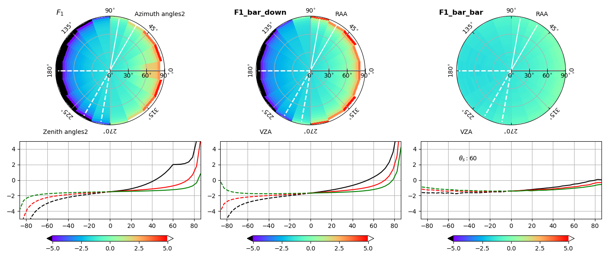
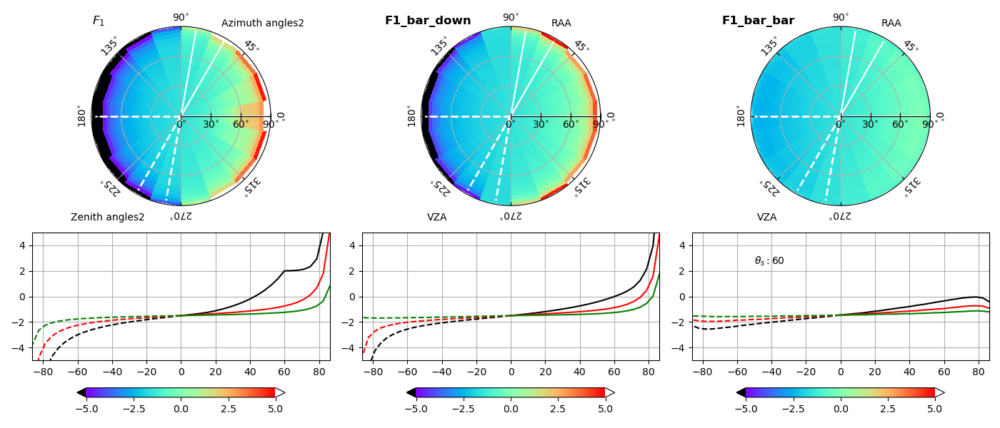
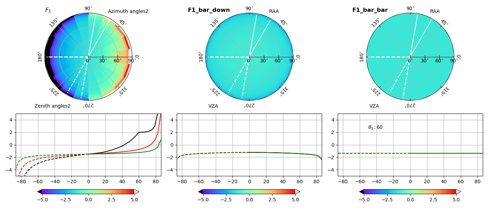
Figure 12: Polar plots of F1: geometric kernel (left), single and double directional averages \({\overline{F}}_{1}\) (centre) and \(\overline{\overline{F_{1}}}\) (right) as a function of view zenith angle (VZA) and relative azimuth angles (RAA) and for a SZA of 60° and λ=865 nm. Transects correspond to RAA=0 (black), 60 (red) and 90° (green). (TOP) AOT=0.01, (MIDDLE) AOT=0.4, (BOTTOM) the sky downward radiance is assumed isotropic.
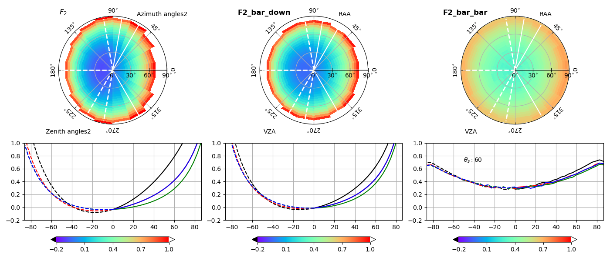
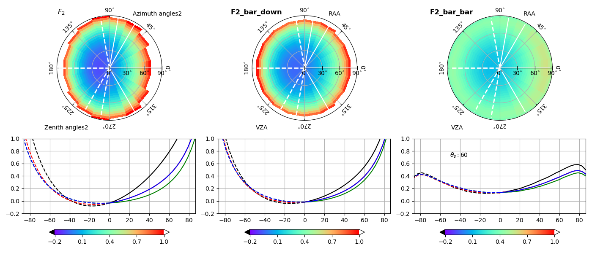
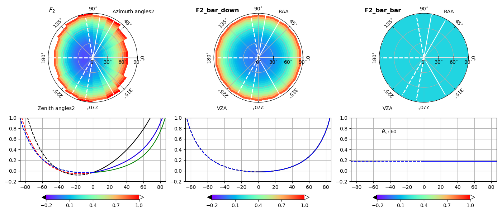
Figure 13: Same as Figure 12 but for the volumetric kernel\({\ F}_{2}\).
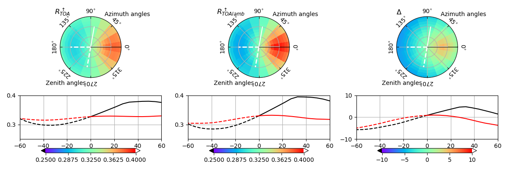
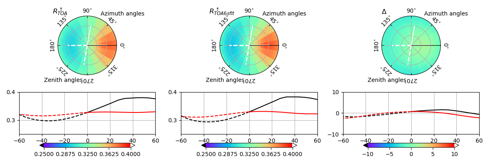
Figure 14: Polar plots of the TOA reflectance for the Proba-V NIR band and for a typical vegetation target modelled as [k0=0.36, k1=0.03, k2 =0.24] and for SZA = 30° and AOT=0.4. The transects correspond to RAA=0° (black), and 90° (red) (Left) Exact computation, (centre) Approximation and (right) relative difference in % between approximation and exact computations. (TOP) 6S formulation where the surface is considered lambertian, (BOTTOM) 6S formulation with a modelled surface BRDF as described in this section.
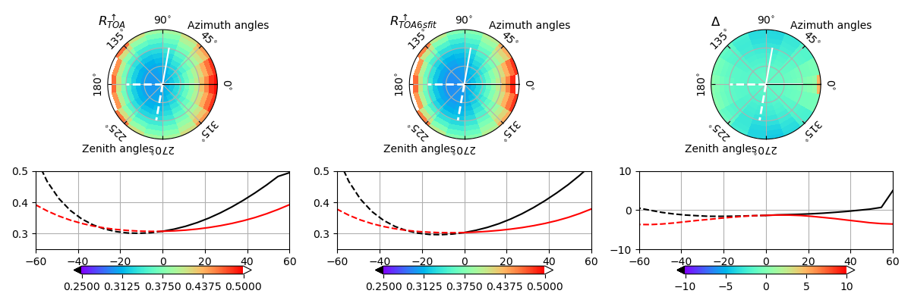
Figure 15: same as Figure 14 but for SZA=60°.
Appendix B: Aerosol Model Definitions
Aerosol variability on Earth
44 688 MERRA-2 grid points have been selected over land. Four dates have been chosen to represent the seasonal variability: 2011/01/01, 2011/04/01, 2011/07/01, and 2011/10/01. Data is taken at 13:00.
Global average of AOT is computed for each component for the four dates. The total AOT increases from winter to summer, especially because of desert dust and OC. Indeed, desert dust AOT increases from 0.04 to 0.10 and OC AOT from 0.02 to 0.05. The three other components AOT vary little with the season.
The aerosol models are defined according to the MERRA-2 5 AOT ratios of each aerosol component u {Xu, u\(\ \in \{ DU,SU,OC,BC,SS\ \}\)}:
Xu = \(\frac{\mathbf{\tau}_{\mathbf{a}\mathbf{;}\mathbf{u}}^{\mathbf{550}}}{\mathbf{\tau}_{\mathbf{a}}^{\mathbf{550}}}\)
Table 13: Statistics about AOT’s of each aerosol component from MERRA-2 analysis of 4 days in 2011
Each mixing ratio Xu covers the 0-100% range except BC which remains smaller than 25% on the four dates. The SU, DU, OC and SS Xu are defined between 0 and 100% with steps of 20%, and the BC Xu is defined between 0 and 30% with a step of 5%.
From the 5x5x5x5x6=3750 possible combinations, 148 combinations of the component Xu effectively occur on the 44 688 pixels of 2011/07/01. These 148 combinations of the components Xu define 148 aerosol models. (See Figure 16)
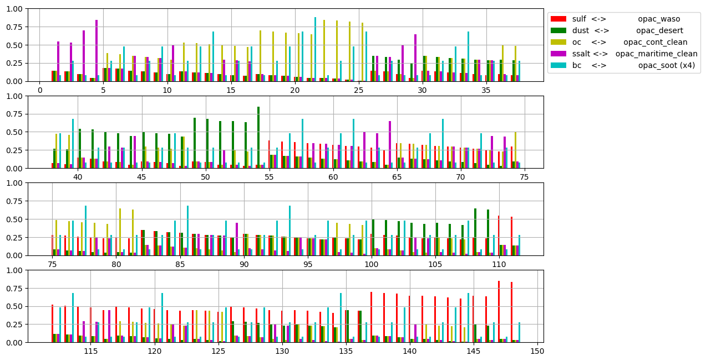
Figure 16: AOT’s ratio’s Xu of the 5 MERRA-2 aerosol components of the 148 aerosol model used in this study
Aerosol optical properties
To calculate easily the optical properties of these mixing, we directly associate one OPAC aerosol model/component with each component u from MERRA-2 (see Table 14). For the moment the relative humidity is considered fixed to 80%
Table 14: Mapping between MERRA-2 aerosol component and OPAC for the computation of optical properties
| SU/SU |
Antarctic model |
| DU/DU |
Desert model |
| OC/OM |
Water soluble (waso) component |
| SS/SS |
Maritime clean model |
| BC/BC |
Soot component |
The aerosol optical properties necessary for SMAC are then computed like this:
Spectral dependence of the AOT K (λ)=\(\frac{\tau(\lambda)}{\tau}(550)\):
\(K(\lambda) = \sum_{u}^{}{K_{u}(\lambda)X}_{u}\)
Single scattering albedo:
\(\varpi_{0}(\lambda) = \sum_{u}^{}{\varpi_{0}^{u}{(\lambda)X}_{u}}\)
Phase function:
\(P(\theta,\lambda) = \sum_{u}^{}{P_{u}(\theta,\lambda)X_{u}}\)
And the derived asymmetry parameter:
\(g(\lambda) = \frac{1}{2}\int_{- 1}^{1}{\mu P(\mu,\lambda)}d\mu\) with \(\mu = cos(\theta)\)
These aerosol optical properties are plotted in Figure 17 and Figure 18.
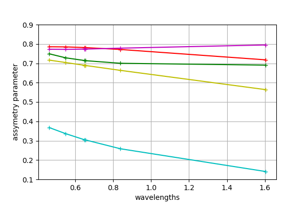
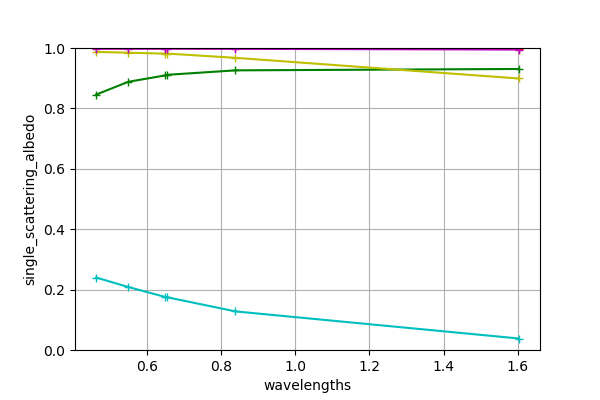
Figure 17: OPAC Aerosols components optical properties with RH=80% at the Proba-V spectral bands
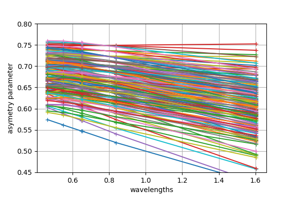
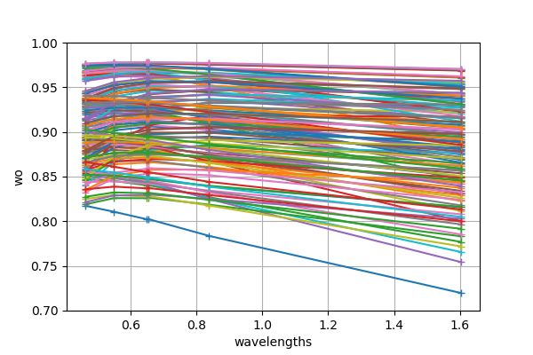
Figure 18: 148 Aerosols mixtures optical properties at the Proba-V spectral bands.
Appendix C: SMAC-CL Implementation
Pixel masking
The cloud contaminated are masked and not further processed. The selection is based on the cloud flag already present in the input file. The idea is to keep the clearest pixels only. It is done by selecting pixels for which the flag is 0. We mask out also pixels for which SZA is above 90°.
Spatial and temporal interpolation of auxiliary data
From elev, lat, lon, the pixel altitude z is obtained through a spatial linear interpolation. The associated altitude uncertainty ∆z is then derived from local maximum terrain slope and a 0.5-pixel geolocation uncertainty.
The sea-level pressure P0, the temperature above ground T, the total ozone column\(\ \mathbf{U}_{\mathbf{O}_{\mathbf{3}}}\), the total column water vapor\(\ \mathbf{U}_{\mathbf{H}_{\mathbf{2}}\mathbf{O}}\) and the AOT at 550 nm \(\mathbf{\tau}_{\mathbf{a}}^{\mathbf{550}}\) , \(\mathbf{\tau}_{\mathbf{a;DU}}^{\mathbf{550}}\mathbf{,\ }\mathbf{\tau}_{\mathbf{a;SU}}^{\mathbf{550}}\mathbf{,}\mathbf{\tau}_{\mathbf{a;OC}}^{\mathbf{550}}\mathbf{,}\mathbf{\tau}_{\mathbf{a;BC}}^{\mathbf{550}}\mathbf{,}\mathbf{\tau}_{\mathbf{a;SS}}^{\mathbf{550}}\)are obtained respectively from the SLP, T10M, TO3, TQV and TOTEXTTAU, DUEXTTAU, SUEXTTAU, OCEXTTAU, BCEXTTAU, SSEXTTAU MERRA-2 auxiliary data (see section2.3) through a spatial and temporal linear interpolation
Then the monthly means of aerosol optical thicknesses coming from the AMIP 10 runs are loaded and spatially interpolated to give \(\mathbf{\tau}_{\mathbf{a;AMIPj}}^{\mathbf{550}}\) ,
\(\mathbf{\tau}_{\mathbf{a;DU;AMIPj}}^{\mathbf{550}}\mathbf{,\ }\mathbf{\tau}_{\mathbf{a;SU;AMIPj}}^{\mathbf{550}}\mathbf{,}\mathbf{\tau}_{\mathbf{a;OC;AMIPj}}^{\mathbf{550}}\mathbf{,}\mathbf{\tau}_{\mathbf{a;BC;AMIPj}}^{\mathbf{550}}\mathbf{,}\mathbf{\tau}_{\mathbf{a;SS;AMIPj}}^{\mathbf{550}}\) for model run number j. The fields TOTEXTTAU, DUEXTTAU, SUEXTTAU, OCEXTTAU, BCEXTTAU, SSEXTTAU from the AMIP auxiliary files are used (see section 2.4Erreur ! Source du renvoi introuvable.)
The auxiliary data is then converted from MERRA-2 to SMAC units:
Table 15: MERRA-2 and SMAC units
| UO3 |
Dobson |
cm.atm |
1e-3 |
| UH2O |
kg.m-2 |
g.cm-2 |
1e-1 |
| P0 |
Pa |
hPa |
1e-2 |
Then, the surface pressure Ps and its uncertainty ∆Ps are computed using Eq. (20), (21), and (22), (23), (24).
Interpolate spatially to have BRDF parameters k1p and k2p
Aerosols models selections
Select the aerosol model number (between 148 models), by minimizing the distance in a 5-dimensional space corresponding to the 5 AOT ratios {Xu, u\(\ \in \{ DU,SU,OC,BC,SS\ \}\)} of the 5 aerosol components
Xu = \(\frac{\mathbf{\tau}_{\mathbf{a}\mathbf{;}\mathbf{u}}^{\mathbf{550}}}{\mathbf{\tau}_{\mathbf{a}}^{\mathbf{550}}}\)
iaero = \(\text{argmin}_i \sum_{u} \left(X_u - X_{u,i}\right)^{2}\), for \(i=0,\ldots,147\).
The Xu,i basis for the 148 predefined models are stored in a text file and read once.
An example of interpolated inputs is given in Figure 19 : Example of inputs ancillary atmospheric data for a VGT sub-image
The list of aerosol models of AMIP are also computed using the same approach to give iaeroAMIPj for j in 1…10
SMAC-CL function
Architecture:
- Language: OpenCL (compatible with GPU and CPU)
- Interface: Python wrapper
- Processing mode: Pixel-parallel (massively parallel on GPU)
Main Processing Function:
def smac_cl_run(
coeffs, # SMAC coefficients (148 aerosol models)
tetas, tetav, # SZA, VZA arrays
phis, phiv, # SAA, VAA arrays
uh2o, uo3, # Water vapor, ozone columns
taup550, # AOD at 550 nm
pressure, # Surface pressure
rtoa, # TOA reflectance
k1p, k2p, # BRDF kernel ratios (default 0 for Lambertian)
iaero_list # List of aerosol model indices (11 models)
):
"""
Inputs: All arrays dimensioned [npixels] or [nbands, npixels]
Outputs:
- rtoc: TOC reflectance [nbands, npixels]
- jacobians: Sensitivity matrices
- u_ensemble: Std dev from aerosol ensemble
"""
Processing Flow:
┌─────────────────────────────────────────────────────┐
│ 1. Reorganize input arrays for GPU efficiency │
│ (transpose, flatten, pad) │
└──────────────────┬──────────────────────────────────┘
│
▼
┌─────────────────────────────────────────────────────┐
│ 2. Upload data to GPU/CPU memory │
│ - TOA reflectances │
│ - Geometry arrays │
│ - Auxiliary data (UH₂O, UO₃, Ps, τa) │
│ - SMAC coefficients (pre-loaded once) │
└──────────────────┬──────────────────────────────────┘
│
▼
┌─────────────────────────────────────────────────────┐
│ 3. GPU/CPU kernel execution (per-pixel parallel) │
│ For each pixel in parallel: │
│ a. Compute gaseous transmissions │
│ b. Compute Rayleigh scattering │
│ c. Compute aerosol scattering │
│ d. Apply SMAC equations → Rtoc │
│ e. Compute analytical Jacobians │
│ f. Repeat for finite-difference Jacobians │
│ g. Repeat for 10 aerosol ensemble members │
└──────────────────┬──────────────────────────────────┘
│
▼
┌─────────────────────────────────────────────────────┐
│ 4. Download results from GPU/CPU │
│ - Rtoc arrays │
│ - Jacobian arrays │
│ - Ensemble statistics │
└──────────────────┬──────────────────────────────────┘
│
▼
┌─────────────────────────────────────────────────────┐
│ 5. CPU post-processing │
│ - Combine uncertainty components │
│ - Apply terrain corrections │
│ - Quality flag assignment │
└─────────────────────────────────────────────────────┘
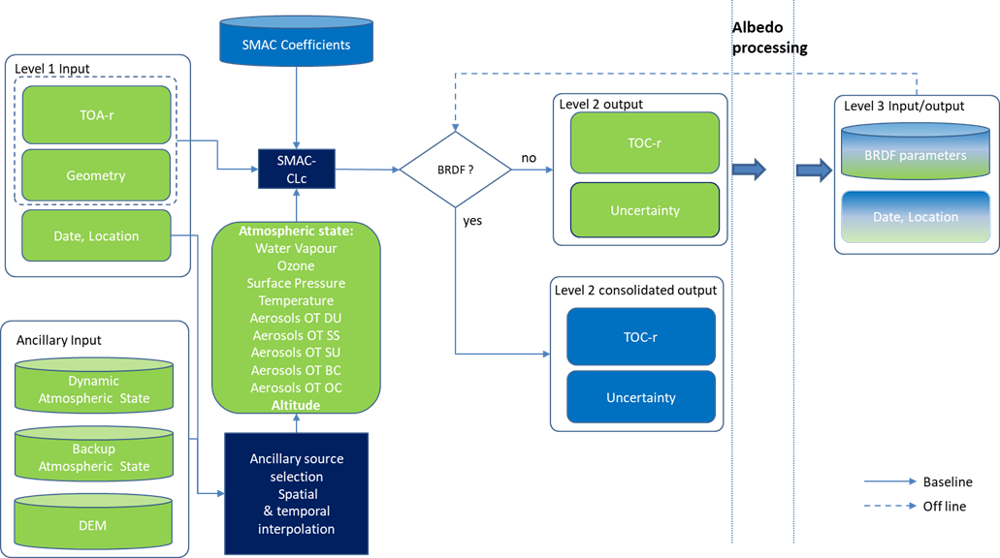
Figure 19: Example of inputs ancillary atmospheric data for a VGT sub-image.
Performance:
- GPU acceleration: ~100× faster than CPU for large images
- Memory requirement: ~2 GB GPU RAM for full-swath processing
- Typical processing time: <TBD second per tile (1000×1000 pixels)
The SMAC-CL run procedure inputs correspond to the following quantities described in this document:
coeffs, SZA, VZA, SAA, VAA,\(\mathbf{U}_{\mathbf{H}_{\mathbf{2}}\mathbf{O}}\),\(\mathbf{U}_{\mathbf{O}_{\mathbf{3}}}\),\(\mathbf{\tau}_{\mathbf{a}}^{\mathbf{550}}\), Ps, TOA-r(λ), k1p, k2p, iaero_list.
The run method is called twice, one for the VIS-NIR bands and one for the SWIR band. iaero_list contains 11 aerosol model number. The first one is iaero, the 10 others are iaero_AMIPj ( see section 10.4).
The BRDF uncertainty term has an explicit configuration switch (enable_brdf_uncertainty). If disabled, uncertainty_from_RTM_BRDF_* is set to exactly 0 for all bands/pixels. If enabled, the term is estimated from the difference between BRDF-aware and Lambertian runs.
All the image inputs are multidimensional
The outputs of the SMAC-CL run routine are:
The AC corrected directional reflectance \(\mathbf{R}_{\mathbf{toc}}\) for each sensor channel λ
The Jacobians\(\ \mathbf{J}_{\mathbf{R}_{\mathbf{toc}}}^{\mathbf{R}_{\mathbf{toa}}}\mathbf{,\ }\mathbf{J}_{\mathbf{R}_{\mathbf{toc}}}^{\mathbf{U}_{\mathbf{O}_{\mathbf{3}}}}\mathbf{,\ }\mathbf{J}_{\mathbf{R}_{\mathbf{toc}}}^{\mathbf{U}_{\mathbf{H}_{\mathbf{2}}\mathbf{O}}}\mathbf{,\ }\mathbf{J}_{\mathbf{R}_{\mathbf{toc}}}^{\mathbf{U}_{\mathbf{P}_{\mathbf{S}}}}\mathbf{\ ,\ }\mathbf{J}_{\mathbf{R}_{\mathbf{toc}}}^{\mathbf{\tau}_{\mathbf{a}}^{\mathbf{550}}}\) for each sensor channel λ
The standard deviation \({\mathbf{u}\left( \mathbf{R}_{\mathbf{toc}} \right)}_{\mathbf{ensemble}}\) due to aerosol models spread for each sensor channel λ
An example of the outputs and Jacobians is given in Figure 21
Level 2A Output Variables
The standard outputs of AC module are:
The AC corrected directional reflectance \(\mathbf{R}_{\mathbf{toc}}\) for each sensor channel λ,
The associated uncertainties \(\mathbf{\mathrm{\Delta}}\mathbf{R}_{\mathbf{toc}}\)for each sensor channel λ,
Flags
Bit 0 : cloud _contaminated (clm != 0)
Bit 1 : High AOD (AOD_550_used >= aodmax, default 0.6)
Bit 2 : High SZA (sza > 80.)
Bit 3 : High AOD gradient (aod_grad > aodmax_grad, default 1.4e-4)
Bit 4 : AC algorithm failure
Bit 5 : Missing auxiliary data
Bit 6 : Out of LUT range
For implementation consistency, a single AOD threshold parameter aodmax is used in configuration and propagated to the SMAC-CL internal high-AOD threshold (taot) at runtime. Therefore, both the internal SMAC-CL high-AOD process flag and the project quality criterion use the same numerical limit.
Implementation Note (v1.1): Bit 1 now compares the MERRA-2 interpolated AOD@550 actually used in the retrieval (TOTEXTTAU, output as AOD_550_used) against aodmax, rather than the maximum TOA reflectance across bands. The reflectance-based criterion was only an indirect proxy for aerosol loading (reflectance is also driven by surface type, sun-view geometry, etc.), whereas the AOD-based criterion directly reflects the quantity the threshold name (“High AOD”) describes and is consistent with the input used elsewhere in the aerosol-correction chain.
The gradient-based flag uses:
\[aod\_grad = \sqrt{\left(\frac{\partial \tau_{a}^{550}}{\partial y}\right)^2 + \left(\frac{\partial \tau_{a}^{550}}{\partial x}\right)^2}\]
and raises Bit 3 when:
\[aod\_grad > aodmax\_grad\]
Implementation Note (v1.1): MERRA AOD high-value thresholding alone leaves gradient “halos” of too-high Rtoc around high-AOD pixels, since the strongest gradient is often only at the halo edge, not the core. The implementation therefore supports an enhanced, two-stage risk mask for Bit 3: Bit3 = Seed OR (DilatedSeed AND Guard), where Seed is the aod_grad > aodmax_grad criterion above (optionally on a robust median/MAD-based threshold instead of a fixed one), DilatedSeed is a morphological dilation (+ optional closing) of Seed to catch adjacent halo-ring pixels, and Guard requires a moderate relative gradient or elevated relative AOD to prevent overgrowth. See Appendix F.1 for the configuration knobs and validation results.
TOC directional reflectances and Jacobians are direct outputs of the SMAC procedure (done in the GPU) while the associated uncertainties are post-processed in the CPU as described in section 5.2. The quantities used are:
The Jacobians \(\mathbf{J}_{\mathbf{R}_{\mathbf{toc}}}^{\mathbf{R}_{\mathbf{toa}}}\mathbf{,\ }\mathbf{J}_{\mathbf{R}_{\mathbf{toc}}}^{\mathbf{U}_{\mathbf{O}_{\mathbf{3}}}}\mathbf{,\ }\mathbf{J}_{\mathbf{R}_{\mathbf{toc}}}^{\mathbf{U}_{\mathbf{H}_{\mathbf{2}}\mathbf{O}}}\mathbf{,\ }\mathbf{J}_{\mathbf{R}_{\mathbf{toc}}}^{\mathbf{U}_{\mathbf{P}_{\mathbf{S}}}}\mathbf{\ ,\ }\mathbf{J}_{\mathbf{R}_{\mathbf{toc}}}^{\mathbf{\tau}_{\mathbf{a}}^{\mathbf{550}}}\)
DTOA-r(λ), \(\mathrm{\Delta}\mathbf{U}_{\mathbf{O}_{\mathbf{3}}}\), \(\mathrm{\Delta}\mathbf{U}_{\mathbf{H}_{\mathbf{2}}\mathbf{O}}\), \(\mathrm{\Delta}\mathbf{P}_{\mathbf{S}}\), \(\mathrm{\Delta}\mathbf{\tau}_{\mathbf{a}}^{\mathbf{550}}\))
\({\mathbf{u}\left( \mathbf{R}_{\mathbf{toc}} \right)}_{\mathbf{ensemble}}\), slope_error, \({\mathbf{u}\left( \mathbf{R}_{\mathbf{toc}} \right)}_{\mathbf{RTM}}\)
The projection and the attributes of the input TOA reflectances are kept. Nevertheless, the longitude and latitude fields are also written in the output file for simplicity.
An example of the outputs is given in.
File: PROBAV_L1C_20141111_184634_2_1KM_V301_toc.nc
Number of variables: 83
Output file structure
| AOD_550_used |
(‘height’, ‘width’) |
(4275, 2601) |
float32 |
1 |
Aerosol Optical Depth at 550nm |
| Jacobian_Rtoc_vs_AOD_B1 |
(‘height’, ‘width’) |
(4275, 2601) |
float32 |
N/A |
N/A |
| Jacobian_Rtoc_vs_AOD_B2 |
(‘height’, ‘width’) |
(4275, 2601) |
float32 |
N/A |
N/A |
| Jacobian_Rtoc_vs_AOD_B3 |
(‘height’, ‘width’) |
(4275, 2601) |
float32 |
N/A |
N/A |
| Jacobian_Rtoc_vs_AOD_B4 |
(‘height’, ‘width’) |
(4275, 2601) |
float32 |
N/A |
N/A |
| Jacobian_Rtoc_vs_Ps_B1 |
(‘height’, ‘width’) |
(4275, 2601) |
float32 |
hPa-1 |
Jacobian of TOC reflectance with respect to pressure |
| Jacobian_Rtoc_vs_Ps_B2 |
(‘height’, ‘width’) |
(4275, 2601) |
float32 |
hPa-1 |
Jacobian of TOC reflectance with respect to pressure |
| Jacobian_Rtoc_vs_Ps_B3 |
(‘height’, ‘width’) |
(4275, 2601) |
float32 |
hPa-1 |
Jacobian of TOC reflectance with respect to pressure |
| Jacobian_Rtoc_vs_Ps_B4 |
(‘height’, ‘width’) |
(4275, 2601) |
float32 |
hPa-1 |
Jacobian of TOC reflectance with respect to pressure |
| Jacobian_Rtoc_vs_Rtoa_B1 |
(‘height’, ‘width’) |
(4275, 2601) |
float32 |
1 |
Jacobian of TOC reflectance with respect to TOA reflectance |
| Jacobian_Rtoc_vs_Rtoa_B2 |
(‘height’, ‘width’) |
(4275, 2601) |
float32 |
1 |
Jacobian of TOC reflectance with respect to TOA reflectance |
| Jacobian_Rtoc_vs_Rtoa_B3 |
(‘height’, ‘width’) |
(4275, 2601) |
float32 |
1 |
Jacobian of TOC reflectance with respect to TOA reflectance |
| Jacobian_Rtoc_vs_Rtoa_B4 |
(‘height’, ‘width’) |
(4275, 2601) |
float32 |
1 |
Jacobian of TOC reflectance with respect to TOA reflectance |
| Jacobian_Rtoc_vs_UH2O_B1 |
(‘height’, ‘width’) |
(4275, 2601) |
float32 |
cm2 g-1 |
Jacobian of TOC reflectance with respect to water vapor |
| Jacobian_Rtoc_vs_UH2O_B2 |
(‘height’, ‘width’) |
(4275, 2601) |
float32 |
cm2 g-1 |
Jacobian of TOC reflectance with respect to water vapor |
| Jacobian_Rtoc_vs_UH2O_B3 |
(‘height’, ‘width’) |
(4275, 2601) |
float32 |
cm2 g-1 |
Jacobian of TOC reflectance with respect to water vapor |
| Jacobian_Rtoc_vs_UH2O_B4 |
(‘height’, ‘width’) |
(4275, 2601) |
float32 |
cm2 g-1 |
Jacobian of TOC reflectance with respect to water vapor |
| Jacobian_Rtoc_vs_UO3_B1 |
(‘height’, ‘width’) |
(4275, 2601) |
float32 |
cm2 g-1 |
Jacobian of TOC reflectance with respect to ozone |
| Jacobian_Rtoc_vs_UO3_B2 |
(‘height’, ‘width’) |
(4275, 2601) |
float32 |
cm2 g-1 |
Jacobian of TOC reflectance with respect to ozone |
| Jacobian_Rtoc_vs_UO3_B3 |
(‘height’, ‘width’) |
(4275, 2601) |
float32 |
cm2 g-1 |
Jacobian of TOC reflectance with respect to ozone |
| Jacobian_Rtoc_vs_UO3_B4 |
(‘height’, ‘width’) |
(4275, 2601) |
float32 |
cm2 g-1 |
Jacobian of TOC reflectance with respect to ozone |
| Quality_flag |
(‘height’, ‘width’) |
(4275, 2601) |
int16 |
N/A |
N/A |
| Rtoc_B1 |
(‘height’, ‘width’) |
(4275, 2601) |
float32 |
1 |
Top of Canopy Bidirectional Reflectance Factor |
| Rtoc_B2 |
(‘height’, ‘width’) |
(4275, 2601) |
float32 |
1 |
Top of Canopy Bidirectional Reflectance Factor |
| Rtoc_B3 |
(‘height’, ‘width’) |
(4275, 2601) |
float32 |
1 |
Top of Canopy Bidirectional Reflectance Factor |
| Rtoc_B4 |
(‘height’, ‘width’) |
(4275, 2601) |
float32 |
1 |
Top of Canopy Bidirectional Reflectance Factor |
| Rtoc_uncertainty_B1 |
(‘height’, ‘width’) |
(4275, 2601) |
float32 |
1 |
Top of Canopy Reflectance Uncertainty |
| Rtoc_uncertainty_B2 |
(‘height’, ‘width’) |
(4275, 2601) |
float32 |
1 |
Top of Canopy Reflectance Uncertainty |
| Rtoc_uncertainty_B3 |
(‘height’, ‘width’) |
(4275, 2601) |
float32 |
1 |
Top of Canopy Reflectance Uncertainty |
| Rtoc_uncertainty_B4 |
(‘height’, ‘width’) |
(4275, 2601) |
float32 |
1 |
Top of Canopy Reflectance Uncertainty |
| SAA |
(‘height’, ‘width’) |
(4275, 2601) |
float32 |
degree |
Solar Azimuth Angle |
| SM_MAP_B1 |
(‘height’, ‘width’) |
(4275, 2601) |
uint8 |
1 |
Status Map |
| SM_MAP_B2 |
(‘height’, ‘width’) |
(4275, 2601) |
uint8 |
1 |
Status Map |
| SM_MAP_B3 |
(‘height’, ‘width’) |
(4275, 2601) |
uint8 |
1 |
Status Map |
| SM_MAP_B4 |
(‘height’, ‘width’) |
(4275, 2601) |
uint8 |
1 |
Status Map |
| SZA |
(‘height’, ‘width’) |
(4275, 2601) |
float32 |
degree |
Solar Zenith Angle |
| VAA |
(‘height’, ‘width’) |
(4275, 2601) |
float32 |
degree |
Sensor Azimuth Angle (VNIR) |
| VAA_IR |
(‘height’, ‘width’) |
(4275, 2601) |
float32 |
degree |
Sensor Azimuth Angle (SWIR) |
| VZA |
(‘height’, ‘width’) |
(4275, 2601) |
float32 |
degree |
Sensor Zenith Angle (VNIR) |
| VZA_IR |
(‘height’, ‘width’) |
(4275, 2601) |
float32 |
degree |
Sensor Zenith Angle (SWIR) |
| aerosol_model_index |
(‘height’, ‘width’) |
(4275, 2601) |
int32 |
N/A |
N/A |
| clm |
(‘height’, ‘width’) |
(4275, 2601) |
uint8 |
1 |
Cloud Mask |
| lat |
(‘height’, ‘width’) |
(4275, 2601) |
float32 |
degrees_north |
Latitude |
| lon |
(‘height’, ‘width’) |
(4275, 2601) |
float32 |
degrees_east |
Longitude |
| ozone_column_used |
(‘height’, ‘width’) |
(4275, 2601) |
float32 |
DU |
Total Column Ozone |
| surface_pressure_used |
(‘height’, ‘width’) |
(4275, 2601) |
float32 |
Pa |
Sea Level Pressure |
| uncertainty_from_RTM_BRDF_B1 |
(‘height’, ‘width’) |
(4275, 2601) |
float32 |
N/A |
N/A |
| uncertainty_from_RTM_BRDF_B2 |
(‘height’, ‘width’) |
(4275, 2601) |
float32 |
N/A |
N/A |
| uncertainty_from_RTM_BRDF_B3 |
(‘height’, ‘width’) |
(4275, 2601) |
float32 |
N/A |
N/A |
| uncertainty_from_RTM_BRDF_B4 |
(‘height’, ‘width’) |
(4275, 2601) |
float32 |
N/A |
N/A |
| uncertainty_from_RTM_fit_B1 |
(‘height’, ‘width’) |
(4275, 2601) |
float32 |
N/A |
N/A |
| uncertainty_from_RTM_fit_B2 |
(‘height’, ‘width’) |
(4275, 2601) |
float32 |
N/A |
N/A |
| uncertainty_from_RTM_fit_B3 |
(‘height’, ‘width’) |
(4275, 2601) |
float32 |
N/A |
N/A |
| uncertainty_from_RTM_fit_B4 |
(‘height’, ‘width’) |
(4275, 2601) |
float32 |
N/A |
N/A |
| uncertainty_from_RTM_terrain_B1 |
(‘height’, ‘width’) |
(4275, 2601) |
float32 |
N/A |
N/A |
| uncertainty_from_RTM_terrain_B2 |
(‘height’, ‘width’) |
(4275, 2601) |
float32 |
N/A |
N/A |
| uncertainty_from_RTM_terrain_B3 |
(‘height’, ‘width’) |
(4275, 2601) |
float32 |
N/A |
N/A |
| uncertainty_from_RTM_terrain_B4 |
(‘height’, ‘width’) |
(4275, 2601) |
float32 |
N/A |
N/A |
| uncertainty_from_TOA_B1 |
(‘height’, ‘width’) |
(4275, 2601) |
float32 |
N/A |
N/A |
| uncertainty_from_TOA_B2 |
(‘height’, ‘width’) |
(4275, 2601) |
float32 |
N/A |
N/A |
| uncertainty_from_TOA_B3 |
(‘height’, ‘width’) |
(4275, 2601) |
float32 |
N/A |
N/A |
| uncertainty_from_TOA_B4 |
(‘height’, ‘width’) |
(4275, 2601) |
float32 |
N/A |
N/A |
| uncertainty_from_aerosol_B1 |
(‘height’, ‘width’) |
(4275, 2601) |
float32 |
N/A |
N/A |
| uncertainty_from_aerosol_B2 |
(‘height’, ‘width’) |
(4275, 2601) |
float32 |
N/A |
N/A |
| uncertainty_from_aerosol_B3 |
(‘height’, ‘width’) |
(4275, 2601) |
float32 |
N/A |
N/A |
| uncertainty_from_aerosol_B4 |
(‘height’, ‘width’) |
(4275, 2601) |
float32 |
N/A |
N/A |
| uncertainty_from_aod_B1 |
(‘height’, ‘width’) |
(4275, 2601) |
float32 |
N/A |
N/A |
| uncertainty_from_aod_B2 |
(‘height’, ‘width’) |
(4275, 2601) |
float32 |
N/A |
N/A |
| uncertainty_from_aod_B3 |
(‘height’, ‘width’) |
(4275, 2601) |
float32 |
N/A |
N/A |
| uncertainty_from_aod_B4 |
(‘height’, ‘width’) |
(4275, 2601) |
float32 |
N/A |
N/A |
| uncertainty_from_h2o_B1 |
(‘height’, ‘width’) |
(4275, 2601) |
float32 |
N/A |
N/A |
| uncertainty_from_h2o_B2 |
(‘height’, ‘width’) |
(4275, 2601) |
float32 |
N/A |
N/A |
| uncertainty_from_h2o_B3 |
(‘height’, ‘width’) |
(4275, 2601) |
float32 |
N/A |
N/A |
| uncertainty_from_h2o_B4 |
(‘height’, ‘width’) |
(4275, 2601) |
float32 |
N/A |
N/A |
| uncertainty_from_ozone_B1 |
(‘height’, ‘width’) |
(4275, 2601) |
float32 |
N/A |
N/A |
| uncertainty_from_ozone_B2 |
(‘height’, ‘width’) |
(4275, 2601) |
float32 |
N/A |
N/A |
| uncertainty_from_ozone_B3 |
(‘height’, ‘width’) |
(4275, 2601) |
float32 |
N/A |
N/A |
| uncertainty_from_ozone_B4 |
(‘height’, ‘width’) |
(4275, 2601) |
float32 |
N/A |
N/A |
| uncertainty_from_pressure_B1 |
(‘height’, ‘width’) |
(4275, 2601) |
float32 |
N/A |
N/A |
| uncertainty_from_pressure_B2 |
(‘height’, ‘width’) |
(4275, 2601) |
float32 |
N/A |
N/A |
| uncertainty_from_pressure_B3 |
(‘height’, ‘width’) |
(4275, 2601) |
float32 |
N/A |
N/A |
| uncertainty_from_pressure_B4 |
(‘height’, ‘width’) |
(4275, 2601) |
float32 |
N/A |
N/A |
| water_vapor_column_used |
(‘height’, ‘width’) |
(4275, 2601) |
float32 |
kg m-2 |
Total Precipitable Water Vapor |
Standard outputs variables (TOC-reflectances and total associated uncertainties). Optional outputs variables (Jacobians and uncertainty contributors). Debug output variables (MERRA-2 inputs and aerosol model index)
Quality Flags:
- Bit 0: Cloud-contaminated pixel
- Bit 1: High AOD (
AOD_550_used >= aodmax, default 0.6; v1.1, see note under Effect/Bit 1 above)
- Bit 2: High SZA (SZA >
szamax, default 80°)
- Bit 3: High AOD gradient — two-stage risk mask
Seed OR (DilatedSeed AND Guard) (v1.1, see Appendix F.1); Seed is aod_grad > aodmax_grad (default 1.4e-4, fixed or robust threshold)
- Bit 4: AC algorithm failure (reserved in current implementation)
- Bit 5: Missing auxiliary data (reserved in current implementation)
- Bit 6: Out-of-LUT range (reserved in current implementation)
Global Attributes:
- Processing algorithm version
- SMAC coefficients version
- MERRA-2 data version and date
- AMIP ensemble run IDs
- DEM version
- Processing date/time
- Geographic coverage
Appendix D: Implementation Notes (NEW in v1.1)
This appendix documents implementation-specific details, performance optimizations, and known limitations of the FDR4VGT production codebase (fdr4vgt_opencl repository). These are not changes to the scientific algorithm described in Sections 1-10, but engineering decisions for operational efficiency, plus the status of two items flagged in Section 5.5 (Known Limitations).
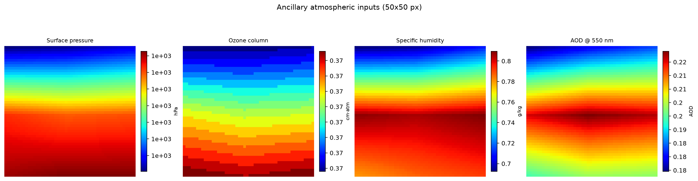
Figure 20: Ancillary atmospheric inputs for a 50x50 thumbnail (surface pressure, ozone, water vapor and AOD@550).
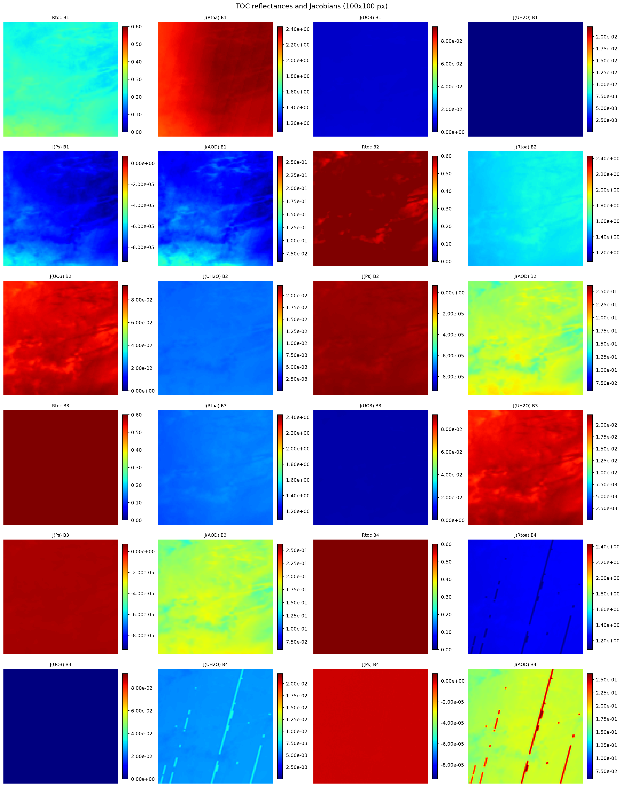
Figure 21: TOC reflectances and Jacobians for the 50x50 thumbnail.
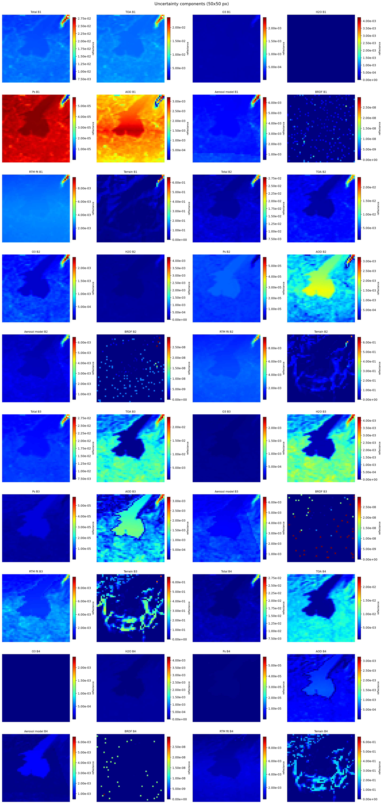
Figure 22: Uncertainty components for the 50x50 thumbnail.
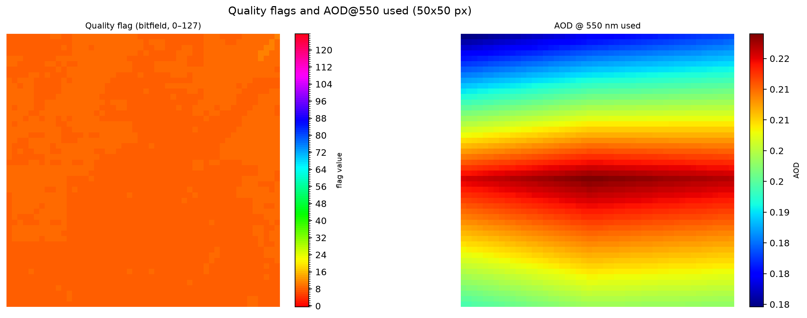
Figure 23: Quality flag map and AOD@550 used over the 50x50 thumbnail centered on the scene maximum of AOD_550_used. The quality flag panel uses a discrete color scale from 0 to 10.
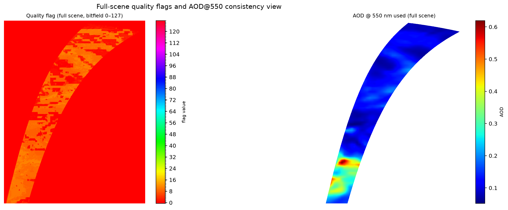
Figure 24: Quality flag map and AOD@550 used over the full scene. The quality flag panel uses a discrete color scale from 0 to 10; values above 10 are clipped for display.
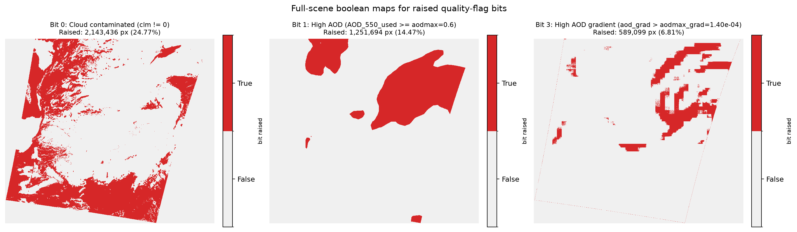
Figure 25: Full-scene boolean maps for each raised quality-flag bit. Each panel shows where the corresponding bit is raised over the whole scene; Bit 1/2/3 criteria are tied to configured thresholds (aodmax, szamax, aodmax_grad).
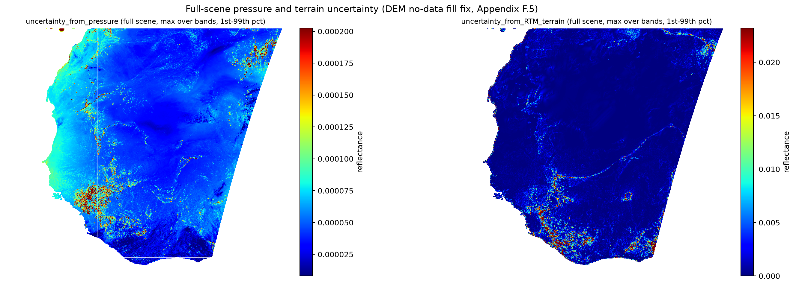
Figure 26: Full-scene view of uncertainty_from_pressure and uncertainty_from_RTM_terrain (maximum over bands). Unlike Figures 20-23, which only cover a small thumbnail crop, this full-scene view is needed to check for the stripe/ring DEM-derivative artefacts described in Appendix F.5, since they may fall outside the thumbnail crop.
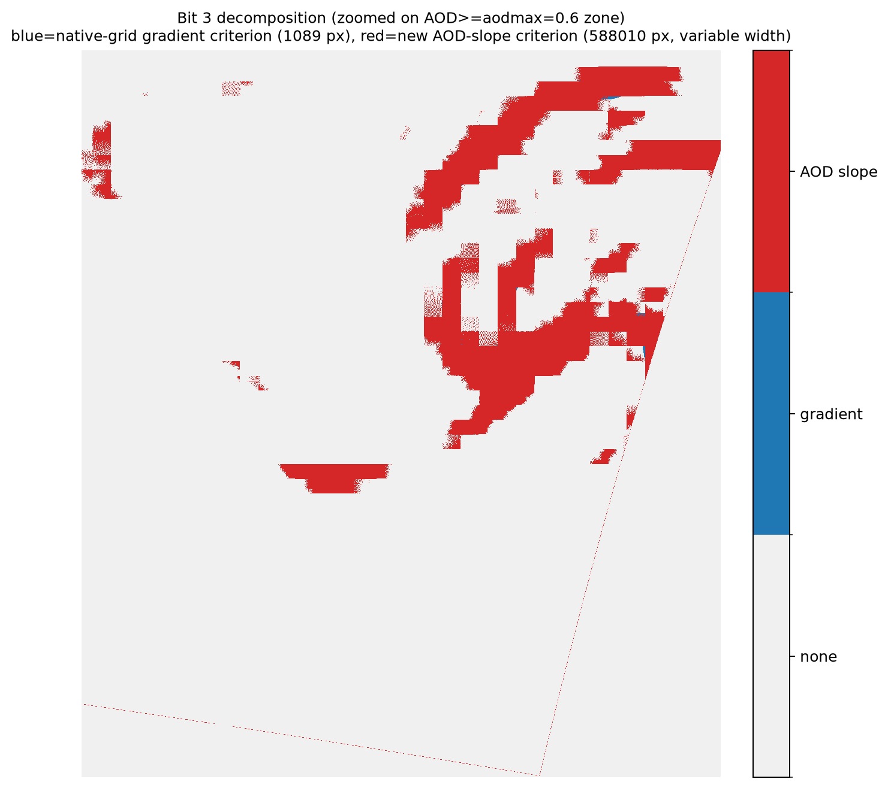
Figure 27: Bit 3 decomposition, zoomed on the AOD_550_used >= aodmax zone: pixels flagged only by the pre-existing gradient criterion (blue) versus pixels flagged by the new aod_contour_enable boundary ring (red, Appendix F.7). The red ring traces the exact outline of the high-AOD zone; at full-scene zoom (Figure 25) this 1-pixel-wide addition is easy to miss next to the larger pre-existing gradient-flagged regions, which is why this dedicated, zoomed, per-component view is provided.
The figures above replace the static screenshots in the previous ATBD version.
Data Type Requirements
Float32 for SLP/T10M (Overflow Fix)
Float32 overflow fix for SLP/T10M
| Issue |
The ancillary Zarr cache stored T10M and SLP as float16 |
| Root cause |
smaccl.c3s_lib.Ps() computes log(R·T) where \(R\cdot T = 287.058 \times 290 \approx 83246\) |
| Overflow |
83246 exceeds the float16 max (65504) → NaN in the pressure correction → NaN Rtoc |
| Fix |
_MERRA_CACHE_FLOAT32_VARS = {'SLP', 'T10M'} keeps these two fields as float32 |
| Commit |
51f7e68 — “Fix ancillary cache dtype overflow causing NaN rTOC” |
Validation (latest PROBA-V run, probav_config.cfg): 80 tiles were processed in 120.0 s (1.50 s/tile), with ancillary precompute in 94.0 s, NetCDF copy in 5.8 s, and peak RSS 3511 MB (1 worker, PoCL CPU backend). On the generated output (Rtoc_B1), finite values are 24.59% over all land pixels and 0.00% over ocean pixels.
Float16 for Small-Value Fields
Fields with small values (approximately 0-0.1) are safely stored as float16:
ERROR (uncertainty components)TOTEXTTAU (AOD values, typically < 1.0)- Aerosol species fractions (0-1 range)
These are widened to float32 on NetCDF write (netCDF4 has no native half-float type).
Unimplemented Features and Future Work
Adjacency Effects
Status: Not corrected. Confirmed known limitation.
Impact: significant for high-contrast scenes (coast, cloud edge, urban/rural boundaries). The SMAC algorithm assumes a horizontally homogeneous scene within the pixel footprint; adjacent pixels with different reflectances contribute to the measured TOA radiance through atmospheric scattering, which is not accounted for.
Future work: implement a semi-empirical adjacency correction (e.g. based on scene contrast and atmospheric conditions).
Köppen-Geiger Regionalization
Status: Implemented.
The AOD uncertainty model (Section 5.3.5, equation definition) uses a global base relation scaled by regional multipliers derived from Köppen-Geiger climate classes. Multipliers are applied to Dtaup before uncertainty propagation in compute_urtoc():
Köppen-Geiger regional AOD uncertainty multipliers (implemented)
| Oceanic/Polar |
0.7× |
Open oceans, Arctic |
| North America/Europe |
1.0× |
Baseline reference |
| Dust-dominated |
1.5× |
Sahara, Arabian Peninsula |
| Biomass burning |
1.4× |
Amazon, Sub-Saharan Africa |
| High pollution |
1.3× |
East Asia, South Asia |
Data sources used in code: kp_map_file (classification map) and mapping_file (kg_zoneNumGueymard.csv).
Water Vapor Uncertainty
Status: conservative 20% estimate (unchanged from v1.0).
Impact: may overestimate total uncertainty in dry conditions.
Future work: refined characterization from MERRA-2 validation studies.
Tile Processing Architecture
The processing pipeline uses a tile-based architecture for memory-bounded, parallel execution:
process_batched() -- Main entry point
1. Generate tile grid from input extent
- Tile size: chunks_size x chunks_size
- Overlap: +/-1 pixel halo
- Total tiles: ceil(y/chunks) x ceil(x/chunks)
2. Precompute ancillary cache (if enabled)
- Interpolate MERRA-2 to full grid
- Save to local Zarr cache
3. Create worker pool (nworkers)
- Fork workers before populating _SHARED
- Copy-on-write inheritance of large objects
4. Process tiles in parallel
- _worker_compute_tile() per tile
- SMAC-CL run (VNIR + SWIR)
- Uncertainty propagation
- Write tile to NetCDF
5. Move local output to final destination
_worker_compute_tile() performs the end-to-end tile computation:
- Read tile data from the input L1C file and the ancillary cache
- Interpolate the DEM and compute terrain (slope/aspect)
- Select the aerosol model (closest in 5D species space)
- Run SMAC-CL (VNIR bands, then SWIR band)
- Compute the BRDF effect (Lambertian vs BRDF run, if enabled)
- Compute the terrain effect (CESBIO model)
- Compute the RTM fit uncertainty (ONNX model)
- Propagate uncertainties (
compute_urtoc())
- Build quality flags (
build_flag())
- Write the tile to the output NetCDF
Appendix E: SMACCL OpenCL Kernel API (NEW in v1.1)
This appendix documents the SMACCL OpenCL function API as implemented in the HYGEOS smaccl repository (OpenCL branch), covering both the Python host wrapper API (smaccl/smaccl.py, class Smaccl) and the OpenCL kernel API (smaccl/devicecl.cl, kernel smaccl). It complements the description of the SMAC-CL function given in Appendix C.5, providing a precise implementation-facing contract for integration and maintenance.
Python Host API
Signature:
def run(
self,
coeffs,
tetas, tetav,
phis, phiv,
uh2o, uo3,
taup550, pression,
rtoa,
k1p, k2p,
iaero,
NBLOOP=1,
)
Returned tuple:
(rsurf, rsurf_0, dev_std, Jrtoa, Juo3, Juh2o, Jpre, Jtaup)
All returned arrays are float32 and shaped like rtoa.
Input semantics:
coeffs: SMAC coefficients; the first dimension defines the number of spectral bands processed.tetas, tetav: solar and view zenith angles (SZA, VZA), float32.phis, phiv: solar and view azimuth angles (SAA, VAA), float32.uh2o, uo3: total water vapor and ozone columns, float32.taup550: aerosol optical depth at 550 nm, float32.pression: surface pressure, float32.rtoa: TOA reflectance, float32.k1p, k2p: BRDF normalized kernel ratios (0 for Lambertian processing).iaero: aerosol model indices per pixel, with Naero candidates.NBLOOP: number of internal per-thread loops (repeated runs / Monte-Carlo patterns).
Shape contract (4D tensor layout for tiled processing):
SMACCL host API shape contract
rtoa |
(NBAND, NZ, XBLOCK, XGRID) |
tetas, tetav, phis, phiv, uh2o, uo3, taup550, pression |
(NZ, XBLOCK, XGRID) |
k1p, k2p |
(NBAND, NZ, XBLOCK, XGRID) |
iaero |
(Naero, NZ, XBLOCK, XGRID) |
Where NBAND is the number of spectral bands handled in the call, NZ is the padded depth along the pixel-index dimension, XBLOCK/XGRID control the OpenCL launch decomposition, and Naero is the number of aerosol candidates used in the ensemble/selection.
Runtime behavior: (1) allocate output buffers for rsurf, rsurf_0, dev_std and the Jacobians; (2) copy host arrays to OpenCL buffers; (3) launch the OpenCL kernel smaccl; (4) copy outputs from device to host arrays.
OpenCL Kernel API
Signature (devicecl.cl):
__kernel void smaccl(
__global coef_atmos *ca,
__global float *tetas_, __global float *tetav_,
__global float *phis_, __global float *phiv_,
__global float *uh2o_, __global float *uo3_,
__global float *taup550_, __global float *pression_,
__global float *rtoa_,
__global float *rsurf,
__global float *Jr, __global float *Juo3,
__global float *Juh2o, __global float *Jpre,
__global float *Jtaup,
__global float *k1p_, __global float *k2p_,
__global int *iaero,
int NMOD, int NBLOOPd, int NBANDd, int NZd
)
Kernel-level constants and finite differences:
dpre = 10.0 hPa for the pressure Jacobian finite differencedtau_rel = 0.1 for the relative AOD perturbationNRUN = 3 + NBLOOPd: 1 reference run + 2 perturbation runs for the finite-difference Jacobians (\(P_s\), \(\tau_{550}\)) + NBLOOPd optional additional looped runs
Output Mapping
The host API output tuple maps to the AC physics described in Sections 3 and 5 as follows:
SMACCL kernel output variable mapping
rsurf |
TOC directional reflectance (rTOC) |
rsurf_0 |
Lambertian-equivalent TOC reflectance (rTOC_0) |
dev_std |
Aerosol-model ensemble spread (UrTOC_ens) |
Jrtoa |
Jacobian \(\partial R_{toc}/\partial R_{toa}\) |
Juo3 |
Jacobian \(\partial R_{toc}/\partial U_{O3}\) |
Juh2o |
Jacobian \(\partial R_{toc}/\partial U_{H2O}\) |
Jpre |
Jacobian \(\partial R_{toc}/\partial P_s\) |
Jtaup |
Jacobian \(\partial R_{toc}/\partial \tau_{550}\) |
ISmaccl Wrapper API
The integration layer ISmaccl wraps the kernel API for product-level execution.
Constructor:
ISmaccl(
config, frac_aer_model, ca,
XBLOCK=128, XGRID=128,
breakpoint=False, ancillary=False,
platform=..., # forwarded to Smaccl(platform=...)
)
Product-level methods:
run_block(l2_data, batch_size=512): block mapping over xarray/dask chunks.run(l2_data, iaero): scene/tile execution and assembly of the xarray output dataset.exec_smaccl(...): low-level preparation/padding/reshaping, kernel call, post-mapping.
exec_smaccl returned tuple:
(
rsurf, rsurf0, dev_std,
Juh2o, Juo3, Jrtoa, Jpre, Jtaup,
Duh2o, Duo3, Drtoa, Dpre, Dtaup,
)
This extends the kernel outputs by including uncertainty-input terms (D*) computed on the host side for subsequent propagation (see the Uncertainty Analysis section).
Band handling in Proba-V mode: the wrapper executes two calls — a VIS/NIR group using VZA/VAA, and a SWIR group using VZA_IR/VAA_IR — then merges the outputs into full 4-band products.
Device and Data Contracts
Data type and ordering requirements: arrays are converted to C-order contiguous layout; floating inputs are cast to float32; the aerosol index array is cast to integer (int16/int32 depending on the processing stage); invalid geolocation values are sanitized before kernel packing; padded extended arrays (GSIZEXT) are filled with NaN then reshaped to the launch geometry.
Device and queue selection: Smaccl.__init__ compiles the kernel source and creates the queue/context via set_queue(xpu, environment). The repository implementation supports the following environment mapping:
OpenCL device/environment mapping
Default |
Portable Computing Language |
NVIDIA CUDA |
Turenne |
Intel(R) OpenCL |
— |
TerraScope |
Intel(R) OpenCL |
NVIDIA CUDA |
If no compatible/available device is found, initialization fails.
Appendix F: Quality Flags, Terrain Preprocessing, and Diagnostics — Implementation Details
This appendix describes implementation-level behavior controlled by configuration parameters: the Bit 3 quality-flag construction, terrain derivative preprocessing, debug diagnostic outputs, and HDF5 tile chunking. These are engineering details of the operational chain and do not change the underlying AC physics described in Sections 1-10.
F.1 AOD Gradient Halo Detection (Quality-Flag Bit 3)
Bit 3 is raised by a two-stage risk mask:
\[Bit3 = Seed \lor (DilatedSeed \land Guard)\]
- Seed — \(aod\_grad > aodmax\_grad\), with two threshold variants selected by
aod_grad_threshold_method:
fixed: a constant threshold. When aod_grad_source=merra_native (gradient computed on the native ~0.5-0.625° MERRA-2 grid), the threshold used is aodmax_grad_native (default 0.15); when aod_grad_source=legacy (gradient of the sensor-grid-interpolated AOD), aodmax_grad (default 1.4e-4) is used.robust (default): \(\max(floor,\ median + k \cdot 1.4826 \cdot MAD,\ quantile(q))\), computed once per scene from the full cached native-grid gradient.
- Dilated Seed — a morphological dilation (with optional closing) of the Seed mask.
- Guard — requires either a moderate gradient (relative to
aodmax_grad) or an elevated interpolated AOD (relative to a threshold) before a dilated pixel is kept.
build_flag() in fdr4vgt/funcs.py computes the mask; interp_merra_native_aod_grad() in fdr4vgt/process.py computes the native-grid gradient.
Configuration knobs ([Coefficients]/[Options] sections):
AOD gradient halo detection configuration knobs
Parameter
aod_grad_source
|
Meaning
merra_native or legacy
|
Default | =====================+ merra_native | |
aod_grad_threshold_method |
fixed or robust |
robust | |
aodmax_grad_native |
Fixed-method threshold used when aod_grad_source=merra_native |
0.15 |
aod_grad_robust_k |
Robust threshold MAD multiplier k |
3.0 |
aod_grad_robust_quantile |
Robust threshold quantile q |
0.98 |
aod_grad_morph_enable |
Enable dilation/closing + guard |
True |
aod_grad_morph_radius_px |
Dilation structuring-element radius (pixels) |
1 |
aod_grad_morph_closing_radius_px |
Morphological closing radius (pixels) |
1 |
aod_grad_morph_guard_rel |
Guard: gradient threshold, relative to aodmax_grad |
0.5 |
aod_grad_morph_aod_rel |
Guard: AOD threshold, relative to a reference AOD level |
0.8 |
F.2 debug Terrain Diagnostics
[Options] debug (default False) enables three extra output variables:
Debug-mode terrain diagnostic output variables
terrain_slope_degrees |
Terrain slope, in degrees |
terrain_elevation_m |
Terrain elevation (from the DEM), in meters |
terrain_delta_elevation_m |
Terrain elevation uncertainty (Delev), in meters |
F.3 HDF5 Chunk Size Clamp on Narrow Edge Tiles
save_nc_batch() (fdr4vgt/in_out.py) clamps the HDF5 chunk height/width per tile to (min(chunks_size, height), min(chunks_size, width)), so edge tiles narrower than the configured chunks_size (default 512) do not exceed their own dimension size.
F.4 Terrain Derivative Preprocessing Controls
Terrain slope/aspect (used by the terrain-effect uncertainty term) are computed on the DEM interpolated onto the sensor grid (lat, lon of the tile), not the native DEM grid:
terrain_slope_method: Horn (3x3, default) or Florinsky, via xdem.terrain.terrain_gaussian_sigma (default 0.0, disabled): optional Gaussian pre-smoothing of the interpolated DEM before slope/aspect, to reduce high-frequency artefacts over low-relief/quantized-elevation areas.sensor_spatial_resolution_m sets the spatial resolution used in the slope computation.
F.5 DEM No-Data Handling for Terrain Derivatives
Invalid/no-data DEM pixels (ocean, lakes, DEM gaps) are filled with the value of their nearest valid neighbor (_nearest_valid_fill(), fdr4vgt/funcs.py, via scipy.ndimage.distance_transform_edt) before computing slope/aspect and Delev, keeping the filled region locally continuous with the surrounding terrain. The final slope/aspect output preserves the original DEM no-data mask (slope[~valid] = np.nan).
F.6 Terrain Derivative Halo Sizing
When terrain_gaussian_sigma > 0, the per-tile lat/lon window used for the terrain slope/aspect computation is widened to \lceil 4 \times \text{sigma} \rceil + 1 pixels of halo (instead of the 1-pixel halo used elsewhere), sliced directly from the full-scene lat/lon grid in _worker_compute_tile() (fdr4vgt/process.py), then cropped back to the tile’s own extent. This ensures the Gaussian kernel has sufficient spatial context at every tile boundary.
F.7 AOD-Slope Criterion for Quality-Flag Bit 3
In addition to the native-grid gradient criterion (Appendix F.1), Bit 3 also includes an AOD-slope criterion based on aod_grad_fine — the gradient magnitude of the AOD already interpolated onto the sensor grid, computed once per scene in precompute_ancillary() (fdr4vgt/process.py) via np.gradient on the full cached AOD_550_used grid. A pixel is flagged when aod_grad_fine exceeds a global, scene-adaptive threshold: \(\max(\text{median} + k \cdot 1.4826 \cdot \text{MAD},\ \text{quantile}(q))\), computed once from the whole-scene grid. This is OR-ed into Bit 3 in build_flag() (fdr4vgt/funcs.py), in addition to (not replacing) the Appendix F.1 criterion.
Configuration knobs ([Options] section):
AOD-slope criterion configuration knobs
aod_contour_enable |
Enable the AOD-slope criterion for Bit 3 |
True |
aod_contour_grad_k |
Robust threshold MAD multiplier k |
2.0 |
aod_contour_grad_quantile |
Robust threshold quantile q |
0.90 |